RAIL 2020Original text
Endangered African Languages Featured in a Digital Collection: The Case of the ǂKhomani San, Hugh Brody Collection
This is the original text of the paper. Translations are linked above.
Proceedings of the first workshop on Resources for African Indigenous Languages.
Original text, shown under its licence (CC BY-NC 4.0). Reuse allowed with attribution, non-commercial only. The translations on this site are by Ernst van Gassen (Arktos AI Lab).
Plain text for reuse, with its licence: English · LICENSE
Affiliations
Kerry Jones, Sanjin Muftic
Director, African Tongue, Linguistics Consultancy, Cape Town, South Africa
Postdoctoral Research Fellow, English Language and Linguistics, Rhodes University, Makhanda, South Africa
Research Associate, Department of General Linguistics, Stellenbosch University, Stellenbosch, South Africa
Digital Scholarship Specialist, Digital Library Services, University of Cape Town, South Africa
E-mail addresses removed for privacy. They are in the original PDF.
Abstract
The ǂKhomani San | Hugh Brody Collection features the voices and history of indigenous hunter gatherer descendants in three endangered languages namely, N|uu, Kora and Khoekhoe as well as a regional dialect of Afrikaans. A large component of this collection is audio-visual (legacy media) recordings of interviews conducted with members of the community by Hugh Brody and his colleagues between 1997 and 2012, referring as far back as the 1800s. The Digital Library Services team at the University of Cape Town aim to showcase the collection digitally on the UCT-wide Digital Collections platform, Ibali which runs on Omeka-S. In this paper we highlight the importance of such a collection in the context of South Africa, and the ethical steps that were taken to ensure the respect of the ǂKhomani San as their stories get uploaded onto a repository and become accessible to all. We will also feature some of the completed collection on Ibali and guide the reader through the organisation of the collection on the Omeka-S backend. Finally, we will outline our development process, from digitisation to repository publishing as well as present some of the challenges in data clean-up, the curation of legacy media, multi-lingual support, and site organisation.
Keywords
endangered African languages, N|uu, Kora, Khoekhoe, digital curation, online showcasing, heritage knowledge, ethics of repositories
1. Introduction
Language endangerment and language loss is a worldwide phenomenon and the African context is no exception to this loss of linguistic diversity. As a result, the scramble to identify, document and preserve indigenous languages using digital technology has gained traction. Despite vast research in the field of language vitality, "relatively little is known about Africa's endangered languages" (Kandybowicz & Torrence, 2017). In Southern Africa, identification and documentation of endangered languages in collaboration with indigenous communities has only fairly recently begun. Records of such efforts are dispersed in various locations around the world. In the instance of the ǂKhomani San | Hugh Brody Collection, South Africa is fortunate to have secured the return of this valuable collection. Upon its return, we were then faced with the challenge of making the contents of the collection freely available and not reserved for the select few.
The potential solution to this problem was to host the collection on a digital platform. The Digital Library Services (DLS) at the University of Cape Town (UCT) suggested the use of their Digital Collections platform, Ibali, which runs on Omeka-S and could accommodate open access. The digital curation process required a number of different steps, from setting up a workflow, to organising the collection data within particular schemas. Once the data was organised within the predetermined schemas, the data could then be hosted on the platform in a structured manner. In this paper we discuss the different phases of collection development with a particular focus on the processes undertaken to publish the collection through an institutional repository. Throughout these processes we encountered many questions, challenges, debates and potential solutions revolving around how to best digitally curate this collection in an ethical and user-friendly way. This collection serves as an important example of representing indigenous knowledge via a digital platform. Furthermore, it describes a methodology to decolonise the archive while maintaining international standards.
By curating an output that is accessible to speakers of endangered languages, the South African public and academics, we created a more inclusive online environment for understanding our historical and contemporary South African context. It must however be noted that lack of access to a reliable internet connection and electricity does preclude many South Africans from being able to readily access online content. Households in South Africa with the least access to communication media are from the Northern Cape (10.3%), which is also the province where the majority of N|uu, Kora and Khoekhoe speakers live (Statistics South Africa, 2018, 36). Such challenges are overcome through access to resources via state and privately funded libraries and computer centres.
2. Ethical Considerations and Community Collaboration
The choice to house and curate the collection in South Africa was an ethical decision made by Hugh Brody in collaboration with Open Channels, a charity organisation based in the United Kingdom, the ǂKhomani San Community and the South African San Institute (SASI), a local non-government organisation. By physically hosting the collection locally, this makes its contents more accessible to South Africans as opposed to having the collection hosted at an overseas institution. International travel is financially out of reach to the majority of the South African population, most especially minority groups such as the descendants of the ǂKhomani San. The collaboration between all interested parties and UCT was expressed in a Gift Agreement outlining the contents of the collection. As part of this agreement, UCT committed to processing, cataloguing and ensuring the collection was freely accessible. This collaboration and contractual agreement became the launching pad for future collaborations and work to come.
3. Linguistic Context of the Featured Languages in South Africa
In Southern Africa there are three language families that were previously grouped together and known as Khoesan languages (Heine & Honken, 2010). Today, Khoesan languages are more accurately described as Ju, Khoe and Tuu languages which is in accordance with the Comparative Method in linguistics (Güldemann, 2008, 123). All three of these language families are endangered and are associated with traditional hunter gatherers and pastoralists, also known as San and Khoe respectively. At the time of their initial documentation there were approximately 35 languages known to science from the Ju, Khoe and Tuu language families (Voβen, 2013). Since then, several of these languages have gone extinct, with only 13 remaining, of which 6 are spoken in South Africa (Jones, 2019).
Ju, Khoe and Tuu languages and their click sounds are a hallmark of Southern African linguistic and cultural heritage. Yet efforts made in research, development and preservation of Khoe and San heritage often falls short when it comes to meaningful community collaboration and accessibility to the content produced. Accountability and accessibility to historical and contemporary research pertaining to Khoe and San peoples is paramount to equity and democratisation of knowledge dissemination in Southern Africa. Khoe and San peoples have a documented history fraught with conflict, dispossession, and identity and language loss resulting in today's context as being minority marginalised groups scattered across Southern Africa.
The ǂKhomani San | Hugh Brody Collection documents the stories of the ǂKhomani people over the last 100 years entailing detailed accounts of linguistic and cultural genocide. Through a process of a cultural audit lead by Nigel Crawhall in collaboration with the United Nations Educational, Scientific and Cultural Organization (UNESCO) and the SASI (Crawhall, 2001) 24 remaining speakers of N|uu made themselves known. N|uu was previously thought to be extinct and belongs to the Tuu or more specifically the ! Ui-Taa language family, our most fragile of the three families. Today, only three mother tongue speakers of N|uu remain and it is therefore classified as a severely endangered language.
Upon further engagement with community members of the ǂKhomani San it was revealed that some could speak Kora also known as ! Ora as a second language. Recordings and transcriptions of such examples can be found in the ǂKhomani San | Hugh Brody Collection. Today Kora is considered moribund (du Plessis, 2018). It was also evident that speakers of N|uu had undergone language shifts to Afrikaans and Khoekhoe. Afrikaans is the historically dominant language during the apartheid era in South Africa and Namibia. Whereas, Khoekhoe also known as Khoekhoegowab, is the lingua franca of the Kalahari with approximately only 2000 speakers remaining in South Africa (Witzlack-Makarevich, 2006, 12).
The utilisation of data from the ǂKhomani San | Hugh Brody Collection was instrumental in several successful land claims in the Northern Cape, South Africa. It is therefore not only a historical and linguistic record of South African history but a unique collection of evidence that resulted in restitution for the ǂKhomani San.
4. Samples from the Collection
What is unique about the ǂKhomani San | Hugh Brody Collection is that it is based in southern Africa and was actively created with the ǂKhomani San community members and researchers not only during the creation of the data but the processing of it too. The ǂKhomani San | Hugh Brody Collection comprises mainly of audio-visual (legacy media) recordings of interviews conducted with members of the community by Hugh Brody and his team between 1997 and 2012. The initial project was motivated by the plight of the community who had been dispossessed from their ancestral land. Through genealogical mapping and detailed interviews, the team was able to support a successful land claim on behalf of the community in 1999, when President Mbeki personally visited to return the land to its rightful owners. Subsequent successful land claims in the area were to follow. Fieldwork continued until 2012, after which the collection was deposited in trust to UCT at Special Collections, UCT Libraries in 2013 (BVF-41 Project Plan). The collection consists of various data types such as transcripts, videos, audio clips, maps and images. Below are some examples of transcript files, photographs and maps that illustrate this highly collaborative data production process.
4.1 Transcript files
The transcript files in the collection are based on over 128 hours of film footage of which more than 30 hours include speech that has been transcribed to date. The transcriptions are verbatim, and colour coded in either N|uu (green), Kora (orange), Khoekhoe (red) or Afrikaans (blue) and translated into English (black), including timing notations. The transcript files are colour coded to assist the reader in easily identifying the different languages transcribed and translated in each transcript file. The process of creating the transcript files was highly collaborative including linguists specialising in each of the languages found in the collection and hands-on verification with mother tongue speakers throughout the transcription and translation process. The challenge with working with a newly developed orthography for N|uu in the field of linguistics, resulted in the development of a multilingual dictionary featuring N|uu with accompanying translations into Afrikaans, Khoekhoe and English for over 1400 lexical entries (Sands et al., 2006).
Table 1 is an example from transcript 1998_01-01 as spoken by Katriena |Una Kassie Rooi where she mixes Afrikaans and N|uu when explaining who she is and where she comes from. For the purposes of a black and white publication the Afrikaans in the transcription column is in roman text and the N|uu in italics.
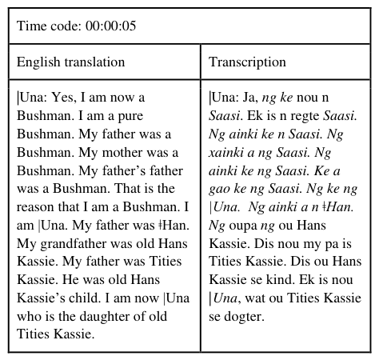
Table 1: Excerpt from transcript file 1998_01-01 in Afrikaans and N|uu translated into English
Table 2 is an example from the transcript 2001_01-04 as spoken by Anna Swarts as she tells a traditional story in Khoekhoe about the Jackal and the Hyena. She tells of a time before there was order in the universe and animals were humans.
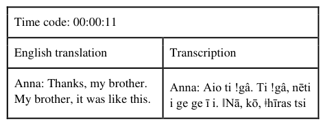
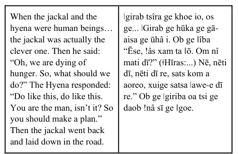
Table 2: Excerpt from transcript file 2001_01-04, traditional folklore told in Khoekhoe and translated into English
4.2 Photographs
Photographs from the collection range from the early 1900s to 1999. Those from the beginning of the 20th century were selected by researchers in the 1990s from UCT's archives, copied and taken along to the southern Kalahari. When interviewing community members, researchers would show the old photographs from UCT and explain that they were trying to learn more about the original people from the area. During this process, Elsie Vaalbooi recognised a photograph of herself (Figure 1) and another of her mother (Figure 2) taken circa 1911. This was the first time she had seen these photographs since they were taken. Elsie was one of the last speakers of N|uu and today her son, Petrus Vaalbooi (Figure 3), is the traditional leader of the ǂKhomani San.
The collection of photographs encompasses many themes such as: individual and family portraits; indigenous fauna and flora used by the ǂKhomani San; culturally or historically important places; language work (as seen in Figure 4); and physical evidence of occupation in the Kalahari Transfrontier Park by the ǂKhomani San before their eviction.
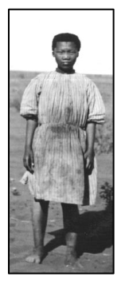
Figure 1 & 2: Photograph of Elsie Vaalbooi (standing) and her mother Marie ||Qoesi (sitting) circa 1911.
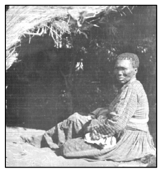
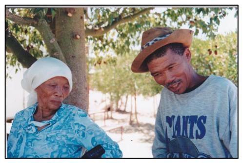
Figure 3: Photograph of Elsie Vaalbooi and her son Petrus Vaalbooi taken shortly before Elsie died in 1997.
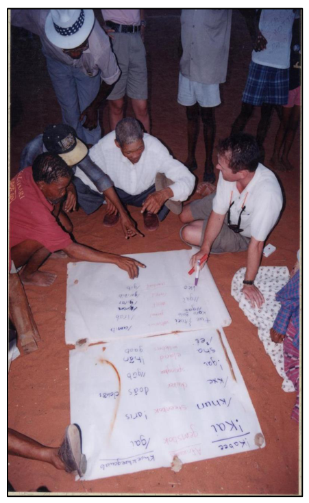
Figure 4: Linguist Nigel Crawhall (sunglasses around his neck), working with Dawid Kruiper (hand pointing over page) and family on trilingual wordlists
4.3 Maps
Several detailed maps were created in collaboration with community members, linguists and cartographers to visually represent the ǂKhomani San genealogy and movements of different family members over time. The GIS data collected provided the necessary input to produce accurate maps representing place names in Khoekhoe, Afrikaans and English as seen in Figure 5. The variety of Afrikaans spoken by the ǂKhomani San community members is unique to the area and provided great insight into the original place names of the southern Kalahari.
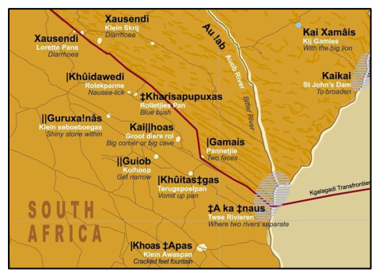
Figure 5: Map of traditional place names in Khoekhoe, Afrikaans and English within and surrounding the Kgalagadi Transfrontier Park
5. Organisation of the Collection on the Omeka-S Backend
The collection has gone through several phases of development, including the ongoing addition of detailed transcripts of the legacy media by specialist linguistics company African Tongue (Director, Kerry Jones). Elements of the collection were previously published online through an Islandora (Fedora Commons) website which provided basic archival description of selected media. However, the website did not provide a way of navigating the collection beyond those descriptions and therefore had to be revised. Consequently, the decision was made to publish the collection through UCT's institution wide collection repository, Ibali, powered by Omeka-S.
The online exhibition tool Omeka-S, in conjunction with the IIIF server, is widely used internationally by university libraries, and the majority of the Galleries, Libraries, Archives, and Museums (GLAM) sector. Omeka-S allows for standards-led organisation and exhibition of digital materials. As opposed to most other web applications, it is not just a front-end to make content look appealing. It is also supported by archival metadata-driven back-end processes, enabling the re-use of materials via many other discovery platforms (Omeka-S Proposal Project Plan). Therefore, it is a repository and not a website because the backend of repositories allows for the creation of metadata and the creation of robust schemas that capture consistent metadata for each of the uploaded items.
5.1 Data Curation: Digitisation to Repository Publishing
As the material in the collection is over 20 years old, and UCT had gone through a phase of changes in personnel handling the digitisation process, as well as changes in the technologies employed for digitisation, a re-evaluation of the overall context was needed. Any kind of workflow that would lead towards a published repository therefore required consolidation, or a period of curation of the contents of the collection in line with new technological advances.
The legacy media is split between tapes using Digital Video (DV) and DVCAM (Sony's version of Digital Video) formats, a subset of which has gone through the transcription process (the entire collection also includes audio tapes as well as VHS). Previously, there was also a process of digitisation which led to derivatives of these tapes being captured on optical and hard drives. All of the legacy media material on the various forms of storage needed to be reconciled, organised and catalogued. It also needed to be analysed, by identifying and organising the content that would lead back to the central aim of the repository - to preserve the histories and the languages of the ǂKhomani San.
With this in mind, the curation component of the digitisation process involved not only looking at the media from an archival point of view, but also from a more conceptual perspective in terms of what was going to be showcased and for whom. How were visitors to the site going to interact with the different media? Who were the visitors going to be and what would they be looking for? Are the visitors going to be members of the ǂKhomani San community, and if so, how could the repository be arranged to make it accessible for them to navigate. Taking these requirements into account, as well as organising the media data, a further step was taken to organise the content of the data. For example, the development of spreadsheets to capture information such as: the full names of ǂKhomani San community members, place names and their associated GIS data, specifically mentioned cultural ceremonies, and indigenous plants for their edible or medicinal properties. All these variables needed to be identified and described in order to curate the media on a website and allow for multiple exploration points of the collection. This organisation of the data led to the grouping of distinct themes within the collection:
- PeopleCommunity
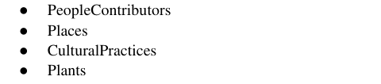
And within each theme, the metadata used to describe it would be unique. For example:
- PeopleCommunity
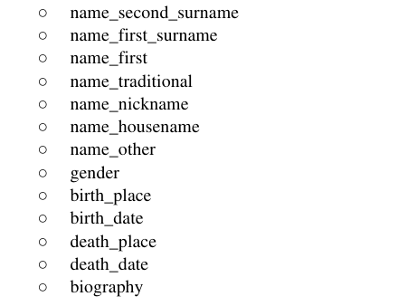
5.2 Challenges in Data Clean-up
The starting point for the creation of linked data rested within the 200+ transcripts that had been developed thus far (covering only a fraction of the entire audio-visual archive). The transcripts followed a similar layout within a Microsoft Word Document, and included a cell which was used to identify keywords related to the media (video tape). The keywords could relate to individuals on the video, other people, cultural ceremonies, locations, etc.
The first step was to extract the keywords cell from each of the 200 documents and place them in a structured table. This table of keywords provided metadata for the creation of records in the repository. In this way, when a media clip, i.e. 1998-05_12 was uploaded, it would be possible to "tag" it with the appropriate keywords that had been identified in the transcript. Having these keywords as tags would enable exploration of the collection.
The process of automatic extraction of the keywords from the 200 documents was enabled through the use of Python programming language which has built-in libraries to access components of a Word document. The code created a table with a column for the "clip name" and another column for the "keywords". With some data tools through the R programming language, it was possible to reframe the data in the format such as Table 3. In this instance, each unique keyword is in a new row and the columns alongside, list the names of the clips where those keywords are found.
However, with multiple individuals working on this collection over the years throughout several phases of the project to discover the data, the keywords became unavoidably inconsistent. While keywords were captured for every single tape, they were established by a number of different individuals without the building of a necessary controlled vocabulary. Therefore, multiple spelling variations arose, as well as more and more languages and their associated translations, resulting in a singular concept being captured in many different ways (see Table 3 - bat-earred fox). For any kind of machine or computer program each of these different spellings is a different concept. A website built upon such a list of keywords would not be able to provide paths to distinct people, places or concepts.
The challenge was then to consolidate these different spellings into single entries, so that when each of the clips were uploaded onto the exhibition site, they would point to a unique list of concepts or entries. This required the use of a digital tool called OpenRefine, which specialises in cleaning up "messy" data. In the example in Table 3 below, OpenRefine was able to identify that the five different spellings of "bat-eared fox" all refer to the same thing and consolidate the entries by combining the columns with the tapes being referenced as one line-item. This would result in the keyword of "bat-eared fox" being tied to distinct media items, enabling the user to journey through all of the clips which have it mentioned.
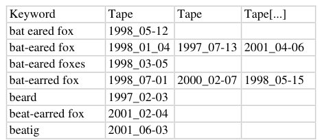
Table 3: An example of data clean-up using OpenRefine to identify and group like entries for consolidation
This process of data clean-up in relation to the keywords found in the transcript files moved towards establishing a controlled vocabulary which could be used in future as further transcripts are added. This controlled process ensures the continual building of the collection by connecting to the existing dataset and forming immediate links. In other words, when a new tape is added, the keyword referring to a certain individual from that tape e.g. "|Una", would be tied to the existing vocabulary and therefore link the new media clip and its associated transcript file, to the existing data containing the same entry.
5.3 Multilingual Support
It was imperative to capture the multilingual and cultural fluidity of the community in the repository. This gives the option of linking data objects and is crucial to the creation of the digital collection and to the objectives of the project. The linked data capabilities of Omeka-S allow for singular concepts to be mapped out to different versions or expressions, allowing for multilingual support. For example, a search for a word (e.g. a place name) in any of the languages within the collection would link back to the same concept, object, or person that it refers to irrespective of the language used in the search
5.4 Navigating the Website
With respect to organising the media and the content on the collections' feature website, the site needed a number of different entry points. Omeka-S lends itself to multiple presentations, due, in large part, to the nature of the database of links that are formed as the items are uploaded. This means that complex webpages populated by diverse elements can be setup through a simple query, as opposed to any hard coding or laborious design and arrangement work. For example, by setting up a simple template and a query to list all elements which reference a specific individual, the Omeka-S software can generate a page that presents all of the various media elements, together with any captured metadata, as well as certain custom texts. It therefore becomes easy to navigate through the collection by spending time on a page dedicated to each individual community member and accessing the transcripts, photos, and videos in which they are present. This way of navigating can be repeated with any of the conceptual elements within the collection (places, cultural ceremonies, plants, etc), thanks to the established keyword vocabulary which allows for multiple expressions to tie to a singular item, i.e. a many to one relationship. This flexibility allows for example, a cultural ceremony to be explored from many different personal narratives, or a particular place to be referred to by more than one speaker, or a specific plant to have multiple uses.
Furthermore, the website can also be explored chronologically through the journeys of the researchers who built the original collection, looking through the media in sequential order. With a view towards a kind of meta curation, the website also has custom pages that draw on a few key items to deliver a more pointed story. An example of this builds upon the keywords that had been lifted from the transcript sheets, consolidated and then used as the keywords in the upload of each of the metadata items. Building upon the description in the previous paragraph, it would be possible to allow visitors to the website to search for specific individuals talking about specific cultural ceremonies, or to listen and view all those who talk about a specific physical location. These custom pages can then be built by the collection team and scaffold upon such queries from the collection to highlight specific issues or themes. These custom pages can continue to be built as more individuals engage with the collection and express their interests or concerns. Such individuals could be researchers or members of the community or general public. These custom pages can be composed of text that is written specifically for that page, and then placed alongside some of the media items, which may be related to people, places, cultural ceremonies or plants. A culmination of custom designed pages based on the user engagement with the content of the collection results in a unique and continuously evolving resource.
6. The Importance of Collaboration
Researchers from diverse fields were instrumental in collating all the relevant data required for a successful land claim through a cultural heritage audit. Such fields included: visual anthropology, law, linguistics, cartography, conservation and social development (as exemplified in Figure 6). Such an endeavour would not have been possible without the collaboration of ǂKhomani San community members, researchers from diverse fields, charity organisations, NGOs and Universities alike. Such unity in diversity of expertise is testament to a potentially new methodology that embraces a decolonial ethos for one of South Africa's most unique narratives.
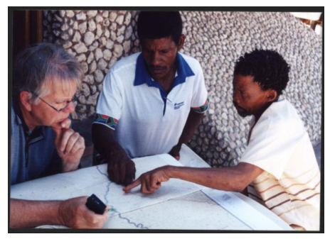
Figure 6: Cartographer Bill Kemp, working alongside linguist Levi Namaseb and former leader of the ǂKhomani San, Dawid Kruiper to create detailed maps of significant places in Khoekhoe, Afrikaans and English
7. Summary
This paper highlights the social, historical and linguistic context of the ǂKhomani San | Hugh Brody collection with a particular emphasis on the digitisation process applied by the University of Cape Town's Digital Library Services to deliver an accessible end-product.
Until the final URL is available please contact Michal Singer, Special Collections, UCT Libraries, for current access details to the collection or either of the authors of this paper.
8. Acknowledgements
This digital collection was made possible due to the input provided by the ǂKhomani San community, Hugh Brody, Open Channels, the South African San Institute, African Tongue, University of Fraser and the University of Cape Town Libraries.
9. Bibliographical References
Adamo, J. (2011). Omeka and the NLM Digital Repository: A New way of Creating HMD-Curated Websites. National Library of Medicine. (Online) Available: https://www.nlm.nih.gov/about/training/associate/associate_projects/AdamoOmekaReport2011.pdf
Crawhall, N. (2001). Written in the Sand: Auditing and managing cultural resources with displaced indigenous peoples: A South African case study. Mowbray: SASI.
Gruber, E. Building Omeka Exhibits with Fedora Repository Content. Published December 15, 2010. (Online) Available: https://scholarslab.lib.virginia.edu/blog/building-omeka-exhibits-with-fedora-repository-content/
Güldemann, T. (2008). Greenberg's "case" for Khoisan: the morphological evidence. In D. Ibriszimow (Ed.), Sprache und Geschichte in Afrika, 19 (pp. 123-153). Köln: Rüdiger Köppe
Hardesty, J.L. (2014). Exhibiting library collections online: Omeka in context. (Online) Available: https://scholarworks.iu.edu/dspace/bitstream/handle/2022/17627/HardestyJulietL_ExhibitingLibraryCollectionsOnlineOmekaInContext.pdf;sequence=1
Heine, B and Honken, H (2010). The Kx'a Family: A new Khoisan genealogy. Journal of Asian and African Studies, 79: 5-36.
Jing, J. (2015). Digital asset management (dam) systems used in Libraries. Queen's University Library. (Online) Available: https://www.slideshare.net/happyrainb/digital-asset-management-dam-systems-used
Jing, J. (2016). The workflows for the ingest of digital objects into a repository/digital library. (Online) Available: https://www.slideshare.net/happyrainb/the-workflows-for-the-ingest-of-digital-objects-into-a-repositorydigital-library
Jones (2019). Contemporary Khoesan languages of South Africa. Critical Arts. DOI: 10.1080/02560046.2019.1688849
Kandybowicz, J., and Torrence, H., (2017). Africa's endangered languages: Documentary and theoretical approaches. New York: Oxford University Press.
Omeka-S. (Online) Available: https://omeka.org/s/
Penn Libraries Guides: Omeka. (Online) Available: https://guides.library.upenn.edu/omeka
Sands, B., Miller, A., Burgman, J., Namaseb, L., Collins, C., Exter, M., (2006). 1400 item N|uu Dictionary. Manuscript.
Statistics South Africa (2018). General Household Survey 2018. Statistical Release, P03182018, Available at: http://www.statssa.gov.za/publications/P0318/P03182018.pdf
du Plessis, M. (2018). Kora: A lost Khoisan language of the early Cape and the Gariep. Pretoria: Unisa Press.
Voβen, R. (2013). The Khoesan Languages. Routledge Language Family Series. London: Routledge.
Witzlack-Makarevich, Al. (2006). Aspects of Information Structure in Richtersveld Nama. MA thesis, Institut für Linguistik der Universität Leipzig.
Endangered African Languages Featured in a Digital Collection: The Case of the ǂKhomani San, Hugh Brody Collection
Langues africaines en danger présentées dans une collection numérique : le cas des ǂKhomani San | Collection Hugh Brody
Affiliations
Kerry Jones, Sanjin Muftic
Director, African Tongue, Linguistics Consultancy, Cape Town, South Africa
Postdoctoral Research Fellow, English Language and Linguistics, Rhodes University, Makhanda, South Africa
Research Associate, Department of General Linguistics, Stellenbosch University, Stellenbosch, South Africa;
Digital Scholarship Specialist, Digital Library Services, University of Cape Town, South Africa
,
Affiliations
Kerry Jones, Sanjin Muftic
Director, African Tongue, Linguistics Consultancy, Cape Town, South Africa
Postdoctoral Research Fellow, English Language and Linguistics, Rhodes University, Makhanda, South Africa
Research Associate, Department of General Linguistics, Stellenbosch University, Stellenbosch, South Africa;
Digital Scholarship Specialist, Digital Library Services, University of Cape Town, South Africa
,
Abstract
Résumé
The ǂKhomani San | Hugh Brody Collection features the voices and history of indigenous hunter gatherer descendants in three endangered languages namely, N|uu, Kora and Khoekhoe as well as a regional dialect of Afrikaans. A large component of this collection is audio-visual (legacy media) recordings of interviews conducted with members of the community by Hugh Brody and his colleagues between 1997 and 2012, referring as far back as the 1800s. The Digital Library Services team at the University of Cape Town aim to showcase the collection digitally on the UCT-wide Digital Collections platform, Ibali which runs on Omeka-S. In this paper we highlight the importance of such a collection in the context of South Africa, and the ethical steps that were taken to ensure the respect of the ǂKhomani San as their stories get uploaded onto a repository and become accessible to all. We will also feature some of the completed collection on Ibali and guide the reader through the organisation of the collection on the Omeka-S backend. Finally, we will outline our development process, from digitisation to repository publishing as well as present some of the challenges in data clean-up, the curation of legacy media, multi-lingual support, and site organisation.
La collection ǂKhomani San | Hugh Brody présente les voix et l’histoire des descendants de chasseurs-cueilleurs autochtones dans trois langues en voie de disparition, à savoir N|uu, Kora et Khoekhoe, ainsi que dans un dialecte régional de l’afrikaans. Une grande partie de cette collection est constituée d'enregistrements audiovisuels (médias patrimoniaux) d'entretiens réalisés avec des membres de la communauté par Hugh Brody et ses collègues entre 1997 et 2012, remontant jusqu'aux années 1800. L'équipe Digital Library Services de l'Université de Cape Town vise à présenter numériquement la collection sur la plateforme de collections numériques de l'UCT, Ibali, qui fonctionne sur Omeka-S. Dans cet article, nous mettons en avant l'importance d'une telle collection dans le contexte de l'Afrique du Sud, ainsi que les étapes éthiques qui ont été prises pour assurer le respect des ǂKhomani San alors que leurs histoires sont mises en ligne sur un dépôt et deviennent accessibles à tous. Nous présenterons également une partie de la collection terminée sur Ibali et guiderons le lecteur à travers l'organisation de la collection sur le backend d'Omeka-S. Enfin, nous détaillerons notre processus de développement, de la numérisation à la publication dans le dépôt, ainsi que certaines des difficultés rencontrées dans le nettoyage des données, la curation des médias patrimoniaux, le support multilingue et l'organisation du site.
Keywords
Mots-clés
endangered African languages, N|uu, Kora, Khoekhoe, digital curation, online showcasing, heritage knowledge, ethics of repositories
langues africaines en voie de disparition, N|uu, Kora, Khoekhoe, conservation numérique, mise en valeur en ligne, savoir patrimonial, éthique des dépôts
1. Introduction
1. Introduction
Language endangerment and language loss is a worldwide phenomenon and the African context is no exception to this loss of linguistic diversity. As a result, the scramble to identify, document and preserve indigenous languages using digital technology has gained traction. Despite vast research in the field of language vitality, "relatively little is known about Africa's endangered languages" (Kandybowicz & Torrence, 2017). In Southern Africa, identification and documentation of endangered languages in collaboration with indigenous communities has only fairly recently begun. Records of such efforts are dispersed in various locations around the world. In the instance of the ǂKhomani San | Hugh Brody Collection, South Africa is fortunate to have secured the return of this valuable collection. Upon its return, we were then faced with the challenge of making the contents of the collection freely available and not reserved for the select few.
La mise en danger et la perte de la langue sont un phénomène mondial et le contexte africain ne fait pas exception à cette perte de diversité linguistique. Par conséquent, la course pour identifier, documenter et préserver les langues indigènes à l'aide de la technologie numérique a pris de l'ampleur. Malgré de vastes recherches dans le domaine de la vitalité linguistique, « on sait relativement peu de choses sur les langues en voie de disparition d'Afrique » (Kandybowicz & Torrence, 2017). En Afrique australe, l'identification et la documentation des langues en voie de disparition en collaboration avec les communautés autochtones n'ont commencé que très récemment. Les enregistrements de ces efforts sont dispersés dans divers endroits à travers le monde. Dans le cas de la collection ǂKhomani San | Hugh Brody, l'Afrique du Sud a la chance d'avoir pu récupérer cette précieuse collection. À son retour, nous avons été confrontés au défi de rendre le contenu de la collection librement disponible et non réservé à quelques privilégiés.
The potential solution to this problem was to host the collection on a digital platform. The Digital Library Services (DLS) at the University of Cape Town (UCT) suggested the use of their Digital Collections platform, Ibali, which runs on Omeka-S and could accommodate open access. The digital curation process required a number of different steps, from setting up a workflow, to organising the collection data within particular schemas. Once the data was organised within the predetermined schemas, the data could then be hosted on the platform in a structured manner. In this paper we discuss the different phases of collection development with a particular focus on the processes undertaken to publish the collection through an institutional repository. Throughout these processes we encountered many questions, challenges, debates and potential solutions revolving around how to best digitally curate this collection in an ethical and user-friendly way. This collection serves as an important example of representing indigenous knowledge via a digital platform. Furthermore, it describes a methodology to decolonise the archive while maintaining international standards.
La solution potentielle à ce problème consistait à héberger la collection sur une plateforme numérique. Les Services de bibliothèque numérique (DLS) de l’Université du Cap (UCT) ont suggéré l’utilisation de leur plateforme de collections numériques, Ibali, qui fonctionne sur Omeka-S et pourrait accueillir le libre accès. Le processus de curation numérique nécessitait un certain nombre d'étapes différentes, allant de la mise en place d'un flux de travail à l'organisation des données de la collection au sein de schémas particuliers. Une fois les données organisées dans les schémas prédéterminés, les données pouvaient alors être hébergées sur la plateforme de manière structurée. Dans cet article, nous discutons des différentes phases du développement de collections, en nous concentrant particulièrement sur les processus mis en œuvre pour publier la collection via un dépôt institutionnel. Tout au long de ces processus, nous avons rencontré de nombreuses questions, défis, débats et solutions potentielles autour de la meilleure façon de gérer numériquement cette collection de manière éthique et conviviale. Cette collection sert d'exemple important de la représentation des connaissances autochtones via une plateforme numérique. De plus, elle décrit une méthodologie pour décoloniser l'archive tout en maintenant les normes internationales.
By curating an output that is accessible to speakers of endangered languages, the South African public and academics, we created a more inclusive online environment for understanding our historical and contemporary South African context. It must however be noted that lack of access to a reliable internet connection and electricity does preclude many South Africans from being able to readily access online content. Households in South Africa with the least access to communication media are from the Northern Cape (10.3%), which is also the province where the majority of N|uu, Kora and Khoekhoe speakers live (Statistics South Africa, 2018, 36). Such challenges are overcome through access to resources via state and privately funded libraries and computer centres.
En organisant une production accessible aux locuteurs de langues en voie de disparition, au public sud-africain et aux universitaires, nous avons créé un environnement en ligne plus inclusif pour comprendre notre contexte sud-africain historique et contemporain. Il faut cependant noter que le manque d'accès à une connexion internet fiable et à l'électricité empêche de nombreux Sud-Africains d'accéder facilement au contenu en ligne. Les ménages sud-africains ayant le moins accès aux médias de communication se trouvent dans le Cap-Nord (10,3 %), qui est également la province où vivent la majorité des locuteurs de N|uu, de Kora et de Khoekhoe (Statistics South Africa, 2018, 36). De tels défis sont surmontés grâce à l'accès aux ressources via les bibliothèques et centres informatiques financés par l'État et le secteur privé.
2. Ethical Considerations and Community Collaboration
2. Considérations éthiques et collaboration communautaire
The choice to house and curate the collection in South Africa was an ethical decision made by Hugh Brody in collaboration with Open Channels, a charity organisation based in the United Kingdom, the ǂKhomani San Community and the South African San Institute (SASI), a local non-government organisation. By physically hosting the collection locally, this makes its contents more accessible to South Africans as opposed to having the collection hosted at an overseas institution. International travel is financially out of reach to the majority of the South African population, most especially minority groups such as the descendants of the ǂKhomani San. The collaboration between all interested parties and UCT was expressed in a Gift Agreement outlining the contents of the collection. As part of this agreement, UCT committed to processing, cataloguing and ensuring the collection was freely accessible. This collaboration and contractual agreement became the launching pad for future collaborations and work to come.
Le choix d'abriter et de gérer la collection en Afrique du Sud était une décision éthique prise par Hugh Brody en collaboration avec Open Channels, une organisation caritative basée au Royaume-Uni, la communauté ǂKhomani San et le South African San Institute (SASI), une organisation non gouvernementale locale. En hébergeant physiquement la collection localement, cela rend son contenu plus accessible aux Sud-Africains par opposition à l'hébergement de la collection dans une institution étrangère. Les voyages internationaux sont financièrement hors de portée de la majorité de la population sud-africaine, en particulier des groupes minoritaires tels que les descendants des ǂKhomani San. La collaboration entre toutes les parties intéressées et l'UCT a été exprimée dans un accord de don décrivant le contenu de la collection. Dans le cadre de cet accord, UCT s'est engagé à traiter, cataloguer et assurer que la collection était librement accessible. Cette collaboration et cet accord contractuel sont devenus le tremplin de futures collaborations et de travaux à venir.
3. Linguistic Context of the Featured Languages in South Africa
3. Contexte linguistique des langues mises en avant en Afrique du Sud
In Southern Africa there are three language families that were previously grouped together and known as Khoesan languages (Heine & Honken, 2010). Today, Khoesan languages are more accurately described as Ju, Khoe and Tuu languages which is in accordance with the Comparative Method in linguistics (Güldemann, 2008, 123). All three of these language families are endangered and are associated with traditional hunter gatherers and pastoralists, also known as San and Khoe respectively. At the time of their initial documentation there were approximately 35 languages known to science from the Ju, Khoe and Tuu language families (Voβen, 2013). Since then, several of these languages have gone extinct, with only 13 remaining, of which 6 are spoken in South Africa (Jones, 2019).
En Afrique australe, il existe trois familles de langues qui étaient auparavant regroupées et connues sous le nom de langues Khoesan (Heine & Honken, 2010). Aujourd'hui, les langues Khoesan sont plus précisément décrites comme les langues Ju, Khoe et Tuu, ce qui est conforme à la méthode comparative en linguistique (Güldemann, 2008, 123). Ces trois familles linguistiques sont en danger et sont associées aux chasseurs-cueilleurs traditionnels et aux pasteurs, également connus sous le nom de San et Khoe respectivement. Au moment de leur première documentation, il y avait environ 35 langues connues de la science parmi les familles de langues Ju, Khoe et Tuu (Voβen, 2013). Depuis lors, plusieurs de ces langues ont disparu, avec seulement 13 langues restantes, dont 6 sont parlées en Afrique du Sud (Jones, 2019).
Ju, Khoe and Tuu languages and their click sounds are a hallmark of Southern African linguistic and cultural heritage. Yet efforts made in research, development and preservation of Khoe and San heritage often falls short when it comes to meaningful community collaboration and accessibility to the content produced. Accountability and accessibility to historical and contemporary research pertaining to Khoe and San peoples is paramount to equity and democratisation of knowledge dissemination in Southern Africa. Khoe and San peoples have a documented history fraught with conflict, dispossession, and identity and language loss resulting in today's context as being minority marginalised groups scattered across Southern Africa.
Les langues Ju, Khoe et Tuu ainsi que leurs sons cliquants sont une caractéristique emblématique du patrimoine linguistique et culturel de l'Afrique australe. Pourtant, les efforts déployés dans la recherche, le développement et la préservation du patrimoine Khoe et San sont souvent insuffisants lorsqu’il s’agit d’une collaboration communautaire significative et de l’accessibilité au contenu produit. La responsabilité et l'accessibilité aux recherches historiques et contemporaines concernant les peuples Khoe et San sont primordiales pour l'équité et la démocratisation de la diffusion des connaissances en Afrique australe. Les peuples Khoe et San ont une histoire documentée marquée par des conflits, des spoliations, ainsi que des pertes d'identité et de langue, ce qui a abouti au contexte actuel de groupes minoritaires marginalisés dispersés à travers l'Afrique australe.
The ǂKhomani San | Hugh Brody Collection documents the stories of the ǂKhomani people over the last 100 years entailing detailed accounts of linguistic and cultural genocide. Through a process of a cultural audit lead by Nigel Crawhall in collaboration with the United Nations Educational, Scientific and Cultural Organization (UNESCO) and the SASI (Crawhall, 2001) 24 remaining speakers of N|uu made themselves known. N|uu was previously thought to be extinct and belongs to the Tuu or more specifically the ! Ui-Taa language family, our most fragile of the three families. Today, only three mother tongue speakers of N|uu remain and it is therefore classified as a severely endangered language.
La collection ǂKhomani San | Hugh Brody documente les histoires du peuple ǂKhomani au cours des 100 dernières années, avec des récits détaillés du génocide linguistique et culturel. Par un processus d'audit culturel mené par Nigel Crawhall en collaboration avec l'Organisation des Nations Unies pour l'éducation, la science et la culture (UNESCO) et le SASI (Crawhall, 2001), 24 locuteurs restants de N|uu se sont fait connaître. N|uu était auparavant considéré comme éteint et appartient au groupe Tuu ou plus spécifiquement au ! Famille des langues Ui-Taa, notre plus fragile des trois familles. Aujourd'hui, il ne reste que trois locuteurs de langue maternelle N|uu et cette langue est donc classée comme une langue en voie de disparition sévère.
Upon further engagement with community members of the ǂKhomani San it was revealed that some could speak Kora also known as ! Ora as a second language. Recordings and transcriptions of such examples can be found in the ǂKhomani San | Hugh Brody Collection. Today Kora is considered moribund (du Plessis, 2018). It was also evident that speakers of N|uu had undergone language shifts to Afrikaans and Khoekhoe. Afrikaans is the historically dominant language during the apartheid era in South Africa and Namibia. Whereas, Khoekhoe also known as Khoekhoegowab, is the lingua franca of the Kalahari with approximately only 2000 speakers remaining in South Africa (Witzlack-Makarevich, 2006, 12).
Lors de discussions plus approfondies avec des membres de la communauté des ǂKhomani San, il a été révélé que certains pouvaient parler le kora, également connu sous le nom de! Ora comme langue seconde. Des enregistrements et des transcriptions de ces exemples se trouvent dans la collection ǂKhomani San | Hugh Brody. Aujourd’hui, Kora est considéré comme moribond (du Plessis, 2018). Il était également évident que les locuteurs de N|uu avaient subi des changements linguistiques vers l'afrikaans et le Khoekhoe. L'afrikaans est la langue historiquement dominante pendant l'ère de l'apartheid en Afrique du Sud et en Namibie. Alors que le Khoekhoe, également connu sous le nom de Khoekhoegowab, est la lingua franca du Kalahari avec environ seulement 2000 locuteurs restants en Afrique du Sud (Witzlack-Makarevich, 2006, 12).
The utilisation of data from the ǂKhomani San | Hugh Brody Collection was instrumental in several successful land claims in the Northern Cape, South Africa. It is therefore not only a historical and linguistic record of South African history but a unique collection of evidence that resulted in restitution for the ǂKhomani San.
L'utilisation des données de la ǂKhomani San | Hugh Brody Collection a été déterminante dans plusieurs revendications foncières réussies dans le Northern Cape, en Afrique du Sud. Il s'agit donc non seulement d'un témoignage historique et linguistique de l'histoire sud-africaine, mais aussi d'une collection unique de preuves qui a abouti à une restitution pour les ǂKhomani San.
4. Samples from the Collection
4. Échantillons de la collection
What is unique about the ǂKhomani San | Hugh Brody Collection is that it is based in southern Africa and was actively created with the ǂKhomani San community members and researchers not only during the creation of the data but the processing of it too. The ǂKhomani San | Hugh Brody Collection comprises mainly of audio-visual (legacy media) recordings of interviews conducted with members of the community by Hugh Brody and his team between 1997 and 2012. The initial project was motivated by the plight of the community who had been dispossessed from their ancestral land. Through genealogical mapping and detailed interviews, the team was able to support a successful land claim on behalf of the community in 1999, when President Mbeki personally visited to return the land to its rightful owners. Subsequent successful land claims in the area were to follow. Fieldwork continued until 2012, after which the collection was deposited in trust to UCT at Special Collections, UCT Libraries in 2013 (BVF-41 Project Plan). The collection consists of various data types such as transcripts, videos, audio clips, maps and images. Below are some examples of transcript files, photographs and maps that illustrate this highly collaborative data production process.
Ce qui rend unique la collection ǂKhomani San | Hugh Brody, c'est qu'elle est basée dans le sud de l'Afrique et a été activement créée avec les membres de la communauté ǂKhomani San et les chercheurs non seulement pendant la création des données, mais aussi pendant leur traitement. La collection ǂKhomani San | Hugh Brody se compose principalement d'enregistrements audio-visuels (médias patrimoniaux) d'entretiens réalisés avec des membres de la communauté par Hugh Brody et son équipe entre 1997 et 2012. Le projet initial a été motivé par le sort de la communauté qui avait été dépossédée de ses terres ancestrales. Grâce à la cartographie généalogique et à des entretiens détaillés, l'équipe a pu soutenir une revendication foncière réussie au nom de la communauté en 1999, lorsque le président Mbeki s'est personnellement rendu sur place pour rendre les terres à leurs propriétaires légitimes. D'autres revendications foncières réussies dans la région ont suivi. Le travail sur le terrain s'est poursuivi jusqu'en 2012, après quoi la collection a été déposée en fiducie à UCT à Special Collections, UCT Libraries en 2013 (plan de projet BVF-41). La collection se compose de divers types de données telles que des transcriptions, des vidéos, des clips audio, des cartes et des images. Ci-dessous, vous trouverez quelques exemples de fichiers de transcriptions, de photographies et de cartes qui illustrent ce processus de production de données hautement collaboratif.
4.1 Transcript files
4.1 Fichiers de transcription
The transcript files in the collection are based on over 128 hours of film footage of which more than 30 hours include speech that has been transcribed to date. The transcriptions are verbatim, and colour coded in either N|uu (green), Kora (orange), Khoekhoe (red) or Afrikaans (blue) and translated into English (black), including timing notations. The transcript files are colour coded to assist the reader in easily identifying the different languages transcribed and translated in each transcript file. The process of creating the transcript files was highly collaborative including linguists specialising in each of the languages found in the collection and hands-on verification with mother tongue speakers throughout the transcription and translation process. The challenge with working with a newly developed orthography for N|uu in the field of linguistics, resulted in the development of a multilingual dictionary featuring N|uu with accompanying translations into Afrikaans, Khoekhoe and English for over 1400 lexical entries (Sands et al., 2006).
Les fichiers de transcription de la collection sont basés sur plus de 128 heures de séquences de films dont plus de 30 heures comprennent des discours qui ont été transcrits à ce jour. Les transcriptions sont littérales, et codées par couleur en N|uu (vert), Kora (orange), Khoekhoe (rouge) ou Afrikaans (bleu) et traduites en anglais (noir), y compris les notations de timing. Les fichiers de transcription sont codés en couleur pour aider le lecteur à identifier facilement les différentes langues transcrites et traduites dans chaque fichier de transcription. Le processus de création des fichiers de transcription a été très collaboratif, y compris des linguistes spécialisés dans chacune des langues de la collection et une vérification pratique avec des locuteurs de langue maternelle tout au long du processus de transcription et de traduction. Le défi de travailler avec une orthographe nouvellement développée pour le N|uu dans le domaine de la linguistique a abouti au développement d'un dictionnaire multilingue présentant le N|uu avec des traductions accompagnantes en Afrikaans, Khoekhoe et anglais pour plus de 1400 entrées lexicales (Sands et al., 2006).
Table 1 is an example from transcript 1998_01-01 as spoken by Katriena |Una Kassie Rooi where she mixes Afrikaans and N|uu when explaining who she is and where she comes from. For the purposes of a black and white publication the Afrikaans in the transcription column is in roman text and the N|uu in italics.
Le tableau 1 est un exemple du transcript 1998_01-01 tel que prononcé par Katriena |Una Kassie Rooi où elle mélange l'afrikaans et le N|uu lorsqu'elle explique qui elle est et d'où elle vient. Aux fins d'une publication en noir et blanc, l'afrikaans dans la colonne de transcription est en caractères romains et le N|uu en italique.
Table 1: Excerpt from transcript file 1998_01-01 in Afrikaans and N|uu translated into English
Tableau 1 : Extrait du fichier de transcription 1998_01-01 en Afrikaans et N|uu traduit en anglais
Table 2 is an example from the transcript 2001_01-04 as spoken by Anna Swarts as she tells a traditional story in Khoekhoe about the Jackal and the Hyena. She tells of a time before there was order in the universe and animals were humans.
Le tableau 2 est un exemple extrait de la transcription 2001_01-04, tel que parlé par Anna Swarts alors qu'elle raconte une histoire traditionnelle en khoekhoe sur le chacal et la hyène. Elle raconte une époque avant qu'il n'y ait de l'ordre dans l'univers et que les animaux soient des humains.
Table 2: Excerpt from transcript file 2001_01-04, traditional folklore told in Khoekhoe and translated into English
Tableau 2 : Extrait du fichier de transcription 2001_01-04, folklore traditionnel raconté en khoekhoe et traduit en anglais
4.2 Photographs
4.2 Photographies
Photographs from the collection range from the early 1900s to 1999. Those from the beginning of the 20th century were selected by researchers in the 1990s from UCT's archives, copied and taken along to the southern Kalahari. When interviewing community members, researchers would show the old photographs from UCT and explain that they were trying to learn more about the original people from the area. During this process, Elsie Vaalbooi recognised a photograph of herself (Figure 1) and another of her mother (Figure 2) taken circa 1911. This was the first time she had seen these photographs since they were taken. Elsie was one of the last speakers of N|uu and today her son, Petrus Vaalbooi (Figure 3), is the traditional leader of the ǂKhomani San.
Les photographies de la collection vont du début des années 1900 à 1999. Ceux du début du 20e siècle ont été sélectionnés par les chercheurs dans les années 1990 dans les archives de l'UCT, copiés et emportés dans le sud du Kalahari. Lors de l'interview des membres de la communauté, les chercheurs montraient les anciennes photographies de l'UCT et expliquaient qu'ils essayaient d'en apprendre davantage sur les habitants d'origine de la région. Au cours de ce processus, Elsie Vaalbooi a reconnu une photo d'elle-même (Figure 1) et une autre de sa mère (Figure 2) prise vers 1911. C'était la première fois qu'elle voyait ces photographies depuis qu'elles avaient été prises. Elsie était l'une des dernières locutrices du N|uu et aujourd'hui, son fils, Petrus Vaalbooi (Figure 3), est le chef traditionnel des ǂKhomani San.
The collection of photographs encompasses many themes such as: individual and family portraits; indigenous fauna and flora used by the ǂKhomani San; culturally or historically important places; language work (as seen in Figure 4); and physical evidence of occupation in the Kalahari Transfrontier Park by the ǂKhomani San before their eviction.
La collection de photographies englobe de nombreux thèmes tels que : les portraits individuels et familiaux ; la faune et la flore indigènes utilisées par les ǂKhomani San ; les lieux culturellement ou historiquement importants ; les travaux linguistiques (comme on peut le voir sur la Figure 4) ; et les preuves physiques d'occupation dans le parc transfrontalier du Kalahari par les ǂKhomani San avant leur expulsion.
Figure 1 & 2: Photograph of Elsie Vaalbooi (standing) and her mother Marie ||Qoesi (sitting) circa 1911.
Figure 1 & 2: Photographie d’Elsie Vaalbooi (debout) et de sa mère Marie ||Qoesi (assise) vers 1911.
Figure 3: Photograph of Elsie Vaalbooi and her son Petrus Vaalbooi taken shortly before Elsie died in 1997.
Figure 3 : Photographie d’Elsie Vaalbooi et de son fils Petrus Vaalbooi prise peu avant la mort d’Elsie en 1997.
Figure 4: Linguist Nigel Crawhall (sunglasses around his neck), working with Dawid Kruiper (hand pointing over page) and family on trilingual wordlists
Figure 4: Le linguiste Nigel Crawhall (lunettes de soleil autour du cou), travaillant avec Dawid Kruiper (main pointant sur la page) et sa famille sur des listes de mots trilingues
4.3 Maps
4.3 Cartes
Several detailed maps were created in collaboration with community members, linguists and cartographers to visually represent the ǂKhomani San genealogy and movements of different family members over time. The GIS data collected provided the necessary input to produce accurate maps representing place names in Khoekhoe, Afrikaans and English as seen in Figure 5. The variety of Afrikaans spoken by the ǂKhomani San community members is unique to the area and provided great insight into the original place names of the southern Kalahari.
Plusieurs cartes détaillées ont été créées en collaboration avec les membres de la communauté, les linguistes et les cartographes pour représenter visuellement la généalogie des ǂKhomani San et les déplacements des différents membres de la famille au fil du temps. Les données SIG collectées ont fourni les entrées nécessaires pour produire des cartes précises représentant les noms de lieux en Khoekhoe, en Afrikaans et en anglais, comme le montre la Figure 5. La variété de l’afrikaans parlée par les membres de la communauté ǂKhomani San est unique à la région et a permis de mieux comprendre les noms de lieux originaux du sud du Kalahari.
Figure 5: Map of traditional place names in Khoekhoe, Afrikaans and English within and surrounding the Kgalagadi Transfrontier Park
Figure 5 : Carte des noms traditionnels de lieux en khoekhoe, afrikaans et anglais à l'intérieur et autour du parc transfrontalier Kgalagadi
5. Organisation of the Collection on the Omeka-S Backend
5. Organisation de la collection sur le backend Omeka-S
The collection has gone through several phases of development, including the ongoing addition of detailed transcripts of the legacy media by specialist linguistics company African Tongue (Director, Kerry Jones). Elements of the collection were previously published online through an Islandora (Fedora Commons) website which provided basic archival description of selected media. However, the website did not provide a way of navigating the collection beyond those descriptions and therefore had to be revised. Consequently, the decision was made to publish the collection through UCT's institution wide collection repository, Ibali, powered by Omeka-S.
La collection a traversé plusieurs phases de développement, y compris l'ajout en cours de transcriptions détaillées des médias historiques par la société de linguistique spécialisée African Tongue (Directrice, Kerry Jones). Certains éléments de la collection ont été publiés précédemment en ligne via un site web Islandora (Fedora Commons) qui fournissait une description archivistique de base des médias sélectionnés. Toutefois, le site Web ne permettait pas de naviguer dans la collection au-delà de ces descriptions et devait donc être révisé. Par conséquent, la décision a été prise de publier la collection via le dépôt de collection institutionnel de l'UCT, Ibali, alimenté par Omeka-S.
The online exhibition tool Omeka-S, in conjunction with the IIIF server, is widely used internationally by university libraries, and the majority of the Galleries, Libraries, Archives, and Museums (GLAM) sector. Omeka-S allows for standards-led organisation and exhibition of digital materials. As opposed to most other web applications, it is not just a front-end to make content look appealing. It is also supported by archival metadata-driven back-end processes, enabling the re-use of materials via many other discovery platforms (Omeka-S Proposal Project Plan). Therefore, it is a repository and not a website because the backend of repositories allows for the creation of metadata and the creation of robust schemas that capture consistent metadata for each of the uploaded items.
L'outil d'exposition en ligne Omeka-S, en conjonction avec le serveur IIIF, est largement utilisé à l'international par les bibliothèques universitaires, ainsi que par la majorité du secteur des Galleries, Libraries, Archives, and Museums (GLAM). Omeka-S permet une organisation et une exposition des matériaux numériques guidées par les normes. Contrairement à la plupart des autres applications Web, ce n'est pas seulement un front-end pour rendre le contenu attrayant. Il est également soutenu par des processus de back-end pilotés par des métadonnées archivistiques, permettant la réutilisation des matériaux via de nombreuses autres plateformes de découverte (Omeka-S Proposal Project Plan). Par conséquent, il s'agit d'un dépôt et non d'un site Web, car le backend des dépôts permet la création de métadonnées et la création de schémas robustes qui capturent des métadonnées cohérentes pour chacun des éléments téléchargés.
5.1 Data Curation: Digitisation to Repository Publishing
5.1 Curation des données : de la numérisation à la publication dans un dépôt
As the material in the collection is over 20 years old, and UCT had gone through a phase of changes in personnel handling the digitisation process, as well as changes in the technologies employed for digitisation, a re-evaluation of the overall context was needed. Any kind of workflow that would lead towards a published repository therefore required consolidation, or a period of curation of the contents of the collection in line with new technological advances.
Étant donné que le matériel de la collection a plus de 20 ans et que l'UCT a connu une phase de changements dans le personnel chargé du processus de numérisation, ainsi que des changements dans les technologies utilisées pour la numérisation, une réévaluation du contexte global était nécessaire. Tout type de flux de travail qui conduirait à un dépôt publié nécessite donc une consolidation, ou une période de conservation du contenu de la collection en fonction des nouvelles avancées technologiques.
The legacy media is split between tapes using Digital Video (DV) and DVCAM (Sony's version of Digital Video) formats, a subset of which has gone through the transcription process (the entire collection also includes audio tapes as well as VHS). Previously, there was also a process of digitisation which led to derivatives of these tapes being captured on optical and hard drives. All of the legacy media material on the various forms of storage needed to be reconciled, organised and catalogued. It also needed to be analysed, by identifying and organising the content that would lead back to the central aim of the repository - to preserve the histories and the languages of the ǂKhomani San.
Les médias traditionnels sont divisés entre les bandes utilisant les formats Digital Video (DV) et DVCAM (la version de Sony du Digital Video), dont un sous-ensemble a subi le processus de transcription (la collection complète comprend également des bandes audio ainsi que des VHS). Auparavant, il y avait aussi un processus de numérisation qui a conduit à la capture de dérivés de ces bandes sur des disques optiques et durs. Tout le matériel médiatique existant sur les différentes formes de stockage devait être réconcilié, organisé et catalogué. Il devait également être analysé, en identifiant et organisant le contenu qui mènerait à l'objectif central du dépôt - préserver les histoires et les langues des ǂKhomani San.
With this in mind, the curation component of the digitisation process involved not only looking at the media from an archival point of view, but also from a more conceptual perspective in terms of what was going to be showcased and for whom. How were visitors to the site going to interact with the different media? Who were the visitors going to be and what would they be looking for? Are the visitors going to be members of the ǂKhomani San community, and if so, how could the repository be arranged to make it accessible for them to navigate. Taking these requirements into account, as well as organising the media data, a further step was taken to organise the content of the data. For example, the development of spreadsheets to capture information such as: the full names of ǂKhomani San community members, place names and their associated GIS data, specifically mentioned cultural ceremonies, and indigenous plants for their edible or medicinal properties. All these variables needed to be identified and described in order to curate the media on a website and allow for multiple exploration points of the collection. This organisation of the data led to the grouping of distinct themes within the collection:
En tenant cela à l'esprit, la composante de curation du processus de numérisation impliquait non seulement l'examen des médias d'un point de vue archivistique, mais aussi d'une perspective plus conceptuelle en termes de ce qui allait être présenté et pour qui. Comment les visiteurs du site allaient-ils interagir avec les différents médias? Qui seraient les visiteurs et que rechercheraient-ils ? Les visiteurs seront-ils des membres de la communauté ǂKhomani San, et si oui, comment le dépôt pourrait-il être organisé pour le rendre accessible à leur navigation. En tenant compte de ces exigences, ainsi que de l'organisation des données multimédias, une étape supplémentaire a été franchie pour organiser le contenu des données. Par exemple, le développement de tableaux pour capturer des informations telles que : les noms complets des membres de la communauté ǂKhomani San, les noms de lieux et leurs données GIS associées, les cérémonies culturelles spécifiquement mentionnées, et les plantes indigènes pour leurs propriétés comestibles ou médicinales. Toutes ces variables devaient être identifiées et décrites afin d’organiser les médias sur un site Web et de permettre de multiples points d’exploration de la collection. Cette organisation des données a conduit au regroupement de thèmes distincts au sein de la collection:
PeopleCommunity
PeopleCommunity
And within each theme, the metadata used to describe it would be unique. For example:
Et au sein de chaque thème, les métadonnées utilisées pour le décrire seraient uniques. Par exemple :
PeopleCommunity
PeopleCommunity
5.2 Challenges in Data Clean-up
5.2 Défis liés au nettoyage des données
The starting point for the creation of linked data rested within the 200+ transcripts that had been developed thus far (covering only a fraction of the entire audio-visual archive). The transcripts followed a similar layout within a Microsoft Word Document, and included a cell which was used to identify keywords related to the media (video tape). The keywords could relate to individuals on the video, other people, cultural ceremonies, locations, etc.
Le point de départ pour la création de données liées reposait sur les 200+ transcriptions qui avaient été développées jusqu'alors (couvrant seulement une fraction de l'ensemble de l'archive audiovisuelle). Les transcriptions suivaient une disposition similaire dans un document Microsoft Word, et incluaient une cellule utilisée pour identifier les mots-clés liés aux médias (bande vidéo). Les mots-clés pouvaient se rapporter aux individus sur la vidéo, à d'autres personnes, à des cérémonies culturelles, à des lieux, etc.
The first step was to extract the keywords cell from each of the 200 documents and place them in a structured table. This table of keywords provided metadata for the creation of records in the repository. In this way, when a media clip, i.e. 1998-05_12 was uploaded, it would be possible to "tag" it with the appropriate keywords that had been identified in the transcript. Having these keywords as tags would enable exploration of the collection.
La première étape consistait à extraire la cellule mots-clés de chacun des 200 documents et à les placer dans un tableau structuré. Ce tableau de mots-clés a fourni des métadonnées pour la création d'enregistrements dans le référentiel. De cette façon, lorsqu'un extrait multimédia, c'est-à-dire 1998-05_12, était téléchargé, il était possible de l'« étiqueter » avec les mots-clés appropriés qui avaient été identifiés dans la transcription. Avoir ces mots-clés comme tags permettrait l'exploration de la collection.
The process of automatic extraction of the keywords from the 200 documents was enabled through the use of Python programming language which has built-in libraries to access components of a Word document. The code created a table with a column for the "clip name" and another column for the "keywords". With some data tools through the R programming language, it was possible to reframe the data in the format such as Table 3. In this instance, each unique keyword is in a new row and the columns alongside, list the names of the clips where those keywords are found.
Le processus d'extraction automatique des mots-clés à partir des 200 documents a été rendu possible grâce à l'utilisation du langage de programmation Python qui possède des bibliothèques intégrées pour accéder aux composants d'un document Word. Le code a créé une table avec une colonne pour le "nom du clip" et une autre colonne pour les "mots-clés". Avec certains outils de données via le langage de programmation R, il était possible de recadrer les données dans le format tel que le tableau 3. Dans ce cas, chaque mot-clé unique est dans une nouvelle ligne et les colonnes à côté, liste les noms des clips où ces mots-clés sont trouvés.
However, with multiple individuals working on this collection over the years throughout several phases of the project to discover the data, the keywords became unavoidably inconsistent. While keywords were captured for every single tape, they were established by a number of different individuals without the building of a necessary controlled vocabulary. Therefore, multiple spelling variations arose, as well as more and more languages and their associated translations, resulting in a singular concept being captured in many different ways (see Table 3 - bat-earred fox). For any kind of machine or computer program each of these different spellings is a different concept. A website built upon such a list of keywords would not be able to provide paths to distinct people, places or concepts.
Cependant, avec plusieurs personnes travaillant sur cette collection au fil des ans tout au long de plusieurs phases du projet pour découvrir les données, les mots clés sont devenus inévitablement incohérents. Bien que les mots-clés aient été saisis pour chaque bande, ils ont été établis par un certain nombre de personnes différentes sans la construction d'un vocabulaire contrôlé nécessaire. Par conséquent, de multiples variations orthographiques sont apparues, ainsi que de plus en plus de langues et leurs traductions associées, ce qui a conduit à ce qu'un concept singulier soit saisi de nombreuses manières différentes (voir Tableau 3 - bat-earred fox). Pour tout type de machine ou de programme informatique, chacune de ces différentes orthographes est un concept différent. Un site Web construit sur une telle liste de mots-clés ne serait pas en mesure de fournir des chemins vers des personnes, des lieux ou des concepts distincts.
The challenge was then to consolidate these different spellings into single entries, so that when each of the clips were uploaded onto the exhibition site, they would point to a unique list of concepts or entries. This required the use of a digital tool called OpenRefine, which specialises in cleaning up "messy" data. In the example in Table 3 below, OpenRefine was able to identify that the five different spellings of "bat-eared fox" all refer to the same thing and consolidate the entries by combining the columns with the tapes being referenced as one line-item. This would result in the keyword of "bat-eared fox" being tied to distinct media items, enabling the user to journey through all of the clips which have it mentioned.
Le défi consistait alors à consolider ces différentes orthographes en une seule entrée, afin que lorsque chacune des séquences était téléchargée sur le site de l'exposition, elles pointent vers une liste unique de concepts ou d'entrées. Cela a nécessité l'utilisation d'un outil numérique appelé OpenRefine, qui se spécialise dans le nettoyage des données "désordonnées". Dans l'exemple du Tableau 3 ci-dessous, OpenRefine a pu identifier que les cinq orthographes différentes de « bat-eared fox » font toutes référence à la même chose et consolider les entrées en combinant les colonnes avec les bandes référencées en un seul élément de ligne. Cela permettrait d'associer le mot-clé "bat-eared fox" à des éléments multimédias distincts, permettant à l'utilisateur de parcourir toutes les séquences qui le mentionnent.
Table 3: An example of data clean-up using OpenRefine to identify and group like entries for consolidation
Tableau 3 : Exemple de nettoyage des données à l'aide d'OpenRefine pour identifier et regrouper les entrées similaires en vue de leur consolidation
This process of data clean-up in relation to the keywords found in the transcript files moved towards establishing a controlled vocabulary which could be used in future as further transcripts are added. This controlled process ensures the continual building of the collection by connecting to the existing dataset and forming immediate links. In other words, when a new tape is added, the keyword referring to a certain individual from that tape e.g. "|Una", would be tied to the existing vocabulary and therefore link the new media clip and its associated transcript file, to the existing data containing the same entry.
Ce processus de nettoyage des données par rapport aux mots-clés trouvés dans les fichiers de transcription s'est déplacé vers l'établissement d'un vocabulaire contrôlé qui pourrait être utilisé à l'avenir à mesure que d'autres transcriptions sont ajoutées. Ce processus contrôlé garantit la construction continue de la collection en se connectant au jeu de données existant et en formant des liens immédiats. En d'autres termes, lorsqu'une nouvelle bande est ajoutée, le mot-clé faisant référence à un certain individu de cette bande, par exemple "|Una", serait lié au vocabulaire existant et relierait donc le nouveau clip multimédia et son fichier de transcription associé, aux données existantes contenant la même entrée.
5.3 Multilingual Support
5.3 Soutien multilingue
It was imperative to capture the multilingual and cultural fluidity of the community in the repository. This gives the option of linking data objects and is crucial to the creation of the digital collection and to the objectives of the project. The linked data capabilities of Omeka-S allow for singular concepts to be mapped out to different versions or expressions, allowing for multilingual support. For example, a search for a word (e.g. a place name) in any of the languages within the collection would link back to the same concept, object, or person that it refers to irrespective of the language used in the search
Il était impératif de capturer la fluidité multilingue et culturelle de la communauté dans le dépôt. Cela offre l'option de lier des objets de données et est crucial pour la création de la collection numérique et pour les objectifs du projet. Les capacités de données liées d'Omeka-S permettent de cartographier des concepts singuliers vers différentes versions ou expressions, permettant un support multilingue. Par exemple, une recherche d'un mot (par exemple un nom de lieu) dans l'une des langues de la collection renverrait au même concept, objet ou personne auquel il se réfère, indépendamment de la langue utilisée dans la recherche.
5.4 Navigating the Website
5.4 Navigation sur le site Web
With respect to organising the media and the content on the collections' feature website, the site needed a number of different entry points. Omeka-S lends itself to multiple presentations, due, in large part, to the nature of the database of links that are formed as the items are uploaded. This means that complex webpages populated by diverse elements can be setup through a simple query, as opposed to any hard coding or laborious design and arrangement work. For example, by setting up a simple template and a query to list all elements which reference a specific individual, the Omeka-S software can generate a page that presents all of the various media elements, together with any captured metadata, as well as certain custom texts. It therefore becomes easy to navigate through the collection by spending time on a page dedicated to each individual community member and accessing the transcripts, photos, and videos in which they are present. This way of navigating can be repeated with any of the conceptual elements within the collection (places, cultural ceremonies, plants, etc), thanks to the established keyword vocabulary which allows for multiple expressions to tie to a singular item, i.e. a many to one relationship. This flexibility allows for example, a cultural ceremony to be explored from many different personal narratives, or a particular place to be referred to by more than one speaker, or a specific plant to have multiple uses.
En ce qui concerne l'organisation des médias et du contenu sur le site Web des collections, le site nécessitait un certain nombre de points d'entrée différents. Omeka-S se prête à des présentations multiples, en raison, en grande partie, de la nature de la base de données de liens qui se forment au fur et à mesure que les éléments sont téléchargés. Cela signifie que des pages web complexes peuplées d'éléments divers peuvent être mises en place grâce à une simple requête, plutôt qu'à un codage fastidieux ou à un travail de conception et d'arrangement laborieux. Par exemple, en mettant en place un modèle simple et une requête pour lister tous les éléments qui font référence à un individu spécifique, le logiciel Omeka-S peut générer une page qui présente tous les différents éléments multimédias, ainsi que les métadonnées capturées, ainsi que certains textes personnalisés. Il devient donc facile de naviguer dans la collection en passant du temps sur une page dédiée à chaque membre de la communauté et en accédant aux transcriptions, photos et vidéos dans lesquelles ils sont présents. Cette façon de naviguer peut être répétée avec n'importe lequel des éléments conceptuels au sein de la collection (lieux, cérémonies culturelles, plantes, etc), grâce au vocabulaire de mots-clés établi qui permet à plusieurs expressions de se rattacher à un seul élément, c'est-à-dire une relation de plusieurs à un. Cette flexibilité permet, par exemple, d’explorer une cérémonie culturelle à partir de nombreux récits personnels différents, ou un lieu particulier à être mentionné par plus d’un orateur, ou une plante spécifique à avoir des utilisations multiples.
Furthermore, the website can also be explored chronologically through the journeys of the researchers who built the original collection, looking through the media in sequential order. With a view towards a kind of meta curation, the website also has custom pages that draw on a few key items to deliver a more pointed story. An example of this builds upon the keywords that had been lifted from the transcript sheets, consolidated and then used as the keywords in the upload of each of the metadata items. Building upon the description in the previous paragraph, it would be possible to allow visitors to the website to search for specific individuals talking about specific cultural ceremonies, or to listen and view all those who talk about a specific physical location. These custom pages can then be built by the collection team and scaffold upon such queries from the collection to highlight specific issues or themes. These custom pages can continue to be built as more individuals engage with the collection and express their interests or concerns. Such individuals could be researchers or members of the community or general public. These custom pages can be composed of text that is written specifically for that page, and then placed alongside some of the media items, which may be related to people, places, cultural ceremonies or plants. A culmination of custom designed pages based on the user engagement with the content of the collection results in a unique and continuously evolving resource.
De plus, le site web peut également être exploré chronologiquement à travers les parcours des chercheurs qui ont constitué la collection originale, en consultant les médias dans l'ordre séquentiel. Dans une optique de méta-curation, le site dispose également de pages personnalisées qui s’appuient sur quelques éléments clés pour livrer une histoire plus pointue. Un exemple de ceci s'appuie sur les mots-clés qui avaient été extraits des feuilles de transcription, consolidés puis utilisés comme mots-clés dans le téléchargement de chacun des éléments de métadonnées. En s'appuyant sur la description du paragraphe précédent, il serait possible de permettre aux visiteurs du site web de rechercher des individus spécifiques parlant de cérémonies culturelles spécifiques, ou d'écouter et de visionner tous ceux qui parlent d'un lieu physique spécifique. Ces pages personnalisées peuvent ensuite être construites par l'équipe de la collection et s'échafauder sur de telles requêtes issues de la collection pour mettre en évidence des problèmes ou des thèmes spécifiques. Ces pages personnalisées peuvent continuer à être construites à mesure que plus d'individus interagissent avec la collection et expriment leurs intérêts ou préoccupations. De tels individus pourraient être des chercheurs ou des membres de la communauté ou du grand public. Ces pages personnalisées peuvent être composées de texte écrit spécifiquement pour cette page, puis placées à côté de certains éléments médiatiques, qui peuvent être liés à des personnes, des lieux, des cérémonies culturelles ou des plantes. Une culmination de pages conçues sur mesure basées sur l'engagement des utilisateurs avec le contenu de la collection aboutit à une ressource unique et évolutive en continu.
6. The Importance of Collaboration
6. L'importance de la collaboration
Researchers from diverse fields were instrumental in collating all the relevant data required for a successful land claim through a cultural heritage audit. Such fields included: visual anthropology, law, linguistics, cartography, conservation and social development (as exemplified in Figure 6). Such an endeavour would not have been possible without the collaboration of ǂKhomani San community members, researchers from diverse fields, charity organisations, NGOs and Universities alike. Such unity in diversity of expertise is testament to a potentially new methodology that embraces a decolonial ethos for one of South Africa's most unique narratives.
Des chercheurs issus de divers domaines ont été essentiels pour rassembler toutes les données pertinentes nécessaires à une revendication foncière réussie grâce à un audit du patrimoine culturel. De tels domaines comprenaient : l'anthropologie visuelle, le droit, la linguistique, la cartographie, la conservation et le développement social (comme l'illustre la Figure 6). Une telle entreprise n'aurait pas été possible sans la collaboration des membres de la communauté ǂKhomani San, des chercheurs issus de divers domaines, des organisations caritatives, des ONG et des universités. Une telle unité dans la diversité des expertises témoigne d'une méthodologie potentiellement nouvelle qui embrasse une éthique décoloniale pour l'une des narratives les plus uniques d'Afrique du Sud.
Figure 6: Cartographer Bill Kemp, working alongside linguist Levi Namaseb and former leader of the ǂKhomani San, Dawid Kruiper to create detailed maps of significant places in Khoekhoe, Afrikaans and English
Figure 6: Le cartographe Bill Kemp, travaillant aux côtés du linguiste Levi Namaseb et de l’ancien chef des ǂKhomani San, Dawid Kruiper, pour créer des cartes détaillées des lieux importants en khoekhoe, afrikaans et anglais
7. Summary
7. Synthèse
This paper highlights the social, historical and linguistic context of the ǂKhomani San | Hugh Brody collection with a particular emphasis on the digitisation process applied by the University of Cape Town's Digital Library Services to deliver an accessible end-product.
Ce document met en lumière le contexte social, historique et linguistique de la collection ǂKhomani San | Hugh Brody, avec un accent particulier sur le processus de numérisation appliqué par les services de la bibliothèque numérique de l'Université de Cape Town pour fournir un produit final accessible.
Until the final URL is available please contact Michal Singer, Special Collections, UCT Libraries, for current access details to the collection or either of the authors of this paper.
Jusqu'à ce que l'URL finale soit disponible, veuillez contacter Michal Singer, Special Collections, UCT Libraries, pour les détails d'accès actuels à la collection ou à l'un des auteurs de cet article.
8. Acknowledgements
8. Remerciements
This digital collection was made possible due to the input provided by the ǂKhomani San community, Hugh Brody, Open Channels, the South African San Institute, African Tongue, University of Fraser and the University of Cape Town Libraries.
Cette collection numérique a été rendue possible grâce aux contributions de la communauté ǂKhomani San, Hugh Brody, Open Channels, l'Institut sud-africain des San, African Tongue, l'Université Fraser et les bibliothèques de l'Université de Cape Town.
9. Bibliographical References
9. Références bibliographiques
Adamo, J. (2011). Omeka and the NLM Digital Repository: A New way of Creating HMD-Curated Websites. National Library of Medicine. (Online) Available: https://www.nlm.nih.gov/about/training/associate/associate_projects/AdamoOmekaReport2011.pdf
Crawhall, N. (2001). Written in the Sand: Auditing and managing cultural resources with displaced indigenous peoples: A South African case study. Mowbray: SASI.
Gruber, E. Building Omeka Exhibits with Fedora Repository Content. Published December 15, 2010. (Online) Available: https://scholarslab.lib.virginia.edu/blog/building-omeka-exhibits-with-fedora-repository-content/
Güldemann, T. (2008). Greenberg's "case" for Khoisan: the morphological evidence. In D. Ibriszimow (Ed.), Sprache und Geschichte in Afrika, 19 (pp. 123-153). Köln: Rüdiger Köppe
Hardesty, J.L. (2014). Exhibiting library collections online: Omeka in context. (Online) Available: https://scholarworks.iu.edu/dspace/bitstream/handle/2022/17627/HardestyJulietL_ExhibitingLibraryCollectionsOnlineOmekaInContext.pdf;sequence=1
Heine, B and Honken, H (2010). The Kx'a Family: A new Khoisan genealogy. Journal of Asian and African Studies, 79: 5-36.
Jing, J. (2015). Digital asset management (dam) systems used in Libraries. Queen's University Library. (Online) Available: https://www.slideshare.net/happyrainb/digital-asset-management-dam-systems-used
Jing, J. (2016). The workflows for the ingest of digital objects into a repository/digital library. (Online) Available: https://www.slideshare.net/happyrainb/the-workflows-for-the-ingest-of-digital-objects-into-a-repositorydigital-library
Jones (2019). Contemporary Khoesan languages of South Africa. Critical Arts. DOI: 10.1080/02560046.2019.1688849
Kandybowicz, J., and Torrence, H., (2017). Africa's endangered languages: Documentary and theoretical approaches. New York: Oxford University Press.
Omeka-S. (Online) Available: https://omeka.org/s/
Penn Libraries Guides: Omeka. (Online) Available: https://guides.library.upenn.edu/omeka
Sands, B., Miller, A., Burgman, J., Namaseb, L., Collins, C., Exter, M., (2006). 1400 item N|uu Dictionary. Manuscript.
Statistics South Africa (2018). General Household Survey 2018. Statistical Release, P03182018, Available at: http://www.statssa.gov.za/publications/P0318/P03182018.pdf
du Plessis, M. (2018). Kora: A lost Khoisan language of the early Cape and the Gariep. Pretoria: Unisa Press.
Voβen, R. (2013). The Khoesan Languages. Routledge Language Family Series. London: Routledge.
Witzlack-Makarevich, Al. (2006). Aspects of Information Structure in Richtersveld Nama. MA thesis, Institut für Linguistik der Universität Leipzig.
Endangered African Languages Featured in a Digital Collection: The Case of the ǂKhomani San, Hugh Brody Collection
Lugha za Afrika zinazokaribia kutoweka zimejumuishwa katika mkusanyiko wa kidijitali: kesi ya ǂKhomani San | Hugh Brody Collection
Affiliations
Kerry Jones, Sanjin Muftic
Director, African Tongue, Linguistics Consultancy, Cape Town, South Africa
Postdoctoral Research Fellow, English Language and Linguistics, Rhodes University, Makhanda, South Africa
Research Associate, Department of General Linguistics, Stellenbosch University, Stellenbosch, South Africa;
Digital Scholarship Specialist, Digital Library Services, University of Cape Town, South Africa
,
Taasisi
Kerry Jones, Sanjin Muftic
Director, African Tongue, Linguistics Consultancy, Cape Town, South Africa
Postdoctoral Research Fellow, English Language and Linguistics, Rhodes University, Makhanda, South Africa
Research Associate, Department of General Linguistics, Stellenbosch University, Stellenbosch, South Africa;
Digital Scholarship Specialist, Digital Library Services, University of Cape Town, South Africa
,
Abstract
Muhtasari
The ǂKhomani San | Hugh Brody Collection features the voices and history of indigenous hunter gatherer descendants in three endangered languages namely, N|uu, Kora and Khoekhoe as well as a regional dialect of Afrikaans. A large component of this collection is audio-visual (legacy media) recordings of interviews conducted with members of the community by Hugh Brody and his colleagues between 1997 and 2012, referring as far back as the 1800s. The Digital Library Services team at the University of Cape Town aim to showcase the collection digitally on the UCT-wide Digital Collections platform, Ibali which runs on Omeka-S. In this paper we highlight the importance of such a collection in the context of South Africa, and the ethical steps that were taken to ensure the respect of the ǂKhomani San as their stories get uploaded onto a repository and become accessible to all. We will also feature some of the completed collection on Ibali and guide the reader through the organisation of the collection on the Omeka-S backend. Finally, we will outline our development process, from digitisation to repository publishing as well as present some of the challenges in data clean-up, the curation of legacy media, multi-lingual support, and site organisation.
Mkusanyiko wa ǂKhomani San | Hugh Brody unaangazia sauti na historia ya wazao wa wawindaji-wakusanyaji wa kiasili katika lugha tatu zilizo hatarini kuangamia, nazo ni N|uu, Kora na Khoekhoe pamoja na lahaja ya kikanda ya Kiafrikana. Sehemu kubwa ya mkusanyiko huu ni rekodi za sauti na picha (midia ya urithi) za mahojiano yaliyofanywa na wanajamii na Hugh Brody na wenzake kati ya 1997 na 2012, yakirejelea nyuma hadi miaka ya 1800. Timu ya Huduma za Maktaba za Kielektroniki katika Chuo Kikuu cha Cape Town inalenga kuonyesha mkusanyiko kwa njia ya kielektroniki kwenye jukwaa la UCT-wide Digital Collections, Ibali ambalo linaendeshwa kwenye Omeka-S. Katika makala haya tunaangazia umuhimu wa mkusanyiko kama huu katika muktadha wa Afrika Kusini, na hatua za kimaadili zilizochukuliwa ili kuhakikisha heshima ya ǂKhomani San kadri hadithi zao zinavyopakiwa kwenye hazina na kuwa zinapatikana kwa wote. Pia tutaangazia baadhi ya mkusanyiko uliokamilika kwenye Ibali na kumwongoza msomaji kupitia mpangilio wa mkusanyiko kwenye mfumo wa nyuma wa Omeka-S. Hatimaye, tutaeleza mchakato wetu wa maendeleo, kutoka uwekaji dijitali hadi uchapishaji kwenye hazina, na pia kuwasilisha baadhi ya changamoto katika usafishaji wa data, uhifadhi wa midia ya urithi, usaidizi wa lugha nyingi, na mpangilio wa tovuti.
Keywords
Maneno Muhimu
endangered African languages, N|uu, Kora, Khoekhoe, digital curation, online showcasing, heritage knowledge, ethics of repositories
Lugha za Afrika zilizo hatarini kuangamia, N|uu, Kora, Khoekhoe, uhifadhi wa dijitali, uonyeshaji mtandaoni, maarifa ya urithi, maadili ya hazina
1. Introduction
1. Utangulizi
Language endangerment and language loss is a worldwide phenomenon and the African context is no exception to this loss of linguistic diversity. As a result, the scramble to identify, document and preserve indigenous languages using digital technology has gained traction. Despite vast research in the field of language vitality, "relatively little is known about Africa's endangered languages" (Kandybowicz & Torrence, 2017). In Southern Africa, identification and documentation of endangered languages in collaboration with indigenous communities has only fairly recently begun. Records of such efforts are dispersed in various locations around the world. In the instance of the ǂKhomani San | Hugh Brody Collection, South Africa is fortunate to have secured the return of this valuable collection. Upon its return, we were then faced with the challenge of making the contents of the collection freely available and not reserved for the select few.
Kupotea kwa lugha na hatari ya kupotea kwa lugha ni jambo linalotokea duniani kote na mazingira ya Afrika si tofauti na hasara hii ya utofauti wa lugha. Kwa matokeo hayo, mbio za kutambua, kurekodi na kuhifadhi lugha za asili kwa kutumia teknolojia ya kidijitali zimepata msukumo. Licha ya utafiti mkubwa katika nyanja ya uhai wa lugha, "kinachojulikana kuhusu lugha zilizo hatarini za Afrika ni kidogo kiasi" (Kandybowicz & Torrence, 2017). Katika Kusini mwa Afrika, utambuzi na uwekaji kumbukumbu wa lugha zilizo hatarini kwa kushirikiana na jamii za kiasili umeanza hivi karibuni tu. Rekodi za juhudi kama hizo zimesambazwa katika maeneo mbalimbali duniani kote. Katika kisa cha Mkusanyiko wa ǂKhomani San | Hugh Brody, Afrika Kusini ina bahati ya kuwa imefanikiwa kupata urejeshwaji wa mkusanyiko huu wa thamani. Baada ya kurejeshwa kwake, tulikabiliwa na changamoto ya kufanya yaliyomo katika mkusanyiko huo yapatikane kwa uhuru na yasiwe yamehifadhiwa kwa wachache waliochaguliwa.
The potential solution to this problem was to host the collection on a digital platform. The Digital Library Services (DLS) at the University of Cape Town (UCT) suggested the use of their Digital Collections platform, Ibali, which runs on Omeka-S and could accommodate open access. The digital curation process required a number of different steps, from setting up a workflow, to organising the collection data within particular schemas. Once the data was organised within the predetermined schemas, the data could then be hosted on the platform in a structured manner. In this paper we discuss the different phases of collection development with a particular focus on the processes undertaken to publish the collection through an institutional repository. Throughout these processes we encountered many questions, challenges, debates and potential solutions revolving around how to best digitally curate this collection in an ethical and user-friendly way. This collection serves as an important example of representing indigenous knowledge via a digital platform. Furthermore, it describes a methodology to decolonise the archive while maintaining international standards.
Suluhisho linalowezekana kwa tatizo hili lilikuwa ni kuweka mkusanyiko huo kwenye jukwaa la kidijitali. Digital Library Services (DLS) katika Chuo Kikuu cha Cape Town (UCT) ilipendekeza matumizi ya jukwaa lao la Digital Collections, Ibali, ambalo linaendeshwa kwenye Omeka-S na linaweza kuwa na upatikanaji wa wazi. Mchakato wa uhifadhi wa dijitali ulihitaji hatua kadhaa tofauti, kuanzia kuanzisha mtiririko wa kazi, hadi kupanga data ya mkusanyiko ndani ya miundo maalum. Mara tu data ilipopangwa ndani ya miundo iliyobainishwa mapema, data hiyo ingeweza kisha kuwekwa kwenye jukwaa kwa njia iliyopangwa. Katika makala hii tunajadili awamu tofauti za uundaji wa mkusanyiko kwa mkazo maalum kwenye michakato iliyofanywa ili kuchapisha mkusanyiko kupitia hazina ya kitaasisi. Katika michakato hii tulikutana na maswali mengi, changamoto, mijadala na ufumbuzi wa uwezekano unaozunguka kuhusu jinsi bora ya kuratibu mkusanyiko huu kwa njia ya kidigitali kwa njia ya maadili na rahisi kwa mtumiaji. Mkusanyiko huu unatumika kama mfano muhimu wa kuwakilisha maarifa asilia kupitia jukwaa la dijitali. Aidha, inaelezea mbinu ya kuondoa ukoloni wa kumbukumbu wakati wa kudumisha viwango vya kimataifa.
By curating an output that is accessible to speakers of endangered languages, the South African public and academics, we created a more inclusive online environment for understanding our historical and contemporary South African context. It must however be noted that lack of access to a reliable internet connection and electricity does preclude many South Africans from being able to readily access online content. Households in South Africa with the least access to communication media are from the Northern Cape (10.3%), which is also the province where the majority of N|uu, Kora and Khoekhoe speakers live (Statistics South Africa, 2018, 36). Such challenges are overcome through access to resources via state and privately funded libraries and computer centres.
Kwa kuhifadhi matokeo yanayoweza kufikiwa na wazungumzaji wa lugha zilizo hatarini kutoweka, umma wa Afrika Kusini na wasomi, tuliunda mazingira jumuishi zaidi mtandaoni kwa ajili ya kuelewa muktadha wetu wa kihistoria na wa kisasa wa Afrika Kusini. Hata hivyo, ni lazima ieleweke kwamba ukosefu wa upatikanaji wa muunganisho wa intaneti unaotegemeka na umeme unawazuia Waafrika Kusini wengi kuweza kupata maudhui ya mtandaoni kwa urahisi. Kaya za Afrika Kusini zenye upatikanaji mdogo zaidi wa vyombo vya mawasiliano zinatoka Northern Cape (10.3%), ambao pia ni mkoa ambako wazungumzaji wengi wa N|uu, Kora na Khoekhoe wanaishi (Statistics South Africa, 2018, 36). Changamoto kama hizo hutatuliwa kupitia upatikanaji wa rasilimali kupitia maktaba na vituo vya kompyuta vinavyofadhiliwa na serikali na sekta binafsi.
2. Ethical Considerations and Community Collaboration
2. Kuzingatia Maadili na Ushirikiano wa Jamii
The choice to house and curate the collection in South Africa was an ethical decision made by Hugh Brody in collaboration with Open Channels, a charity organisation based in the United Kingdom, the ǂKhomani San Community and the South African San Institute (SASI), a local non-government organisation. By physically hosting the collection locally, this makes its contents more accessible to South Africans as opposed to having the collection hosted at an overseas institution. International travel is financially out of reach to the majority of the South African population, most especially minority groups such as the descendants of the ǂKhomani San. The collaboration between all interested parties and UCT was expressed in a Gift Agreement outlining the contents of the collection. As part of this agreement, UCT committed to processing, cataloguing and ensuring the collection was freely accessible. This collaboration and contractual agreement became the launching pad for future collaborations and work to come.
Uamuzi wa kuweka na kusimamia mkusanyiko nchini Afrika Kusini ulikuwa uamuzi wa kimaadili uliofanywa na Hugh Brody kwa ushirikiano na Open Channels, shirika la hisani lenye makao yake nchini Uingereza, Jumuiya ya ǂKhomani San na Taasisi ya San ya Afrika Kusini (SASI), shirika lisilo la kiserikali la ndani. Kwa kupangisha mkusanyiko huo kimwili ndani ya nchi, hii inafanya yaliyomo yake yaweze kupatikana kwa urahisi zaidi na Waafrika Kusini tofauti na kuwa na mkusanyiko huo ukipangishwa katika taasisi ya ng'ambo. Usafiri wa kimataifa ni nje ya uwezo wa kifedha kwa idadi kubwa ya wakazi wa Afrika Kusini, hasa makundi ya wachache kama vile vizazi vya ǂKhomani San. Ushirikiano kati ya pande zote zinazohusika na UCT ulionyeshwa katika Mkataba wa Zawadi ulioelezea yaliyomo katika mkusanyiko huo. Kama sehemu ya mkataba huu, UCT ilijitolea kuchakata, kuorodhesha na kuhakikisha kuwa mkusanyiko ulikuwa unapatikana kwa uhuru. Ushirikiano huu na makubaliano ya kimkataba yakawa msingi wa ushirikiano wa baadaye na kazi ijayo.
3. Linguistic Context of the Featured Languages in South Africa
3. Muktadha wa Kiisimu wa Lugha Zilizoangaziwa nchini Afrika Kusini
In Southern Africa there are three language families that were previously grouped together and known as Khoesan languages (Heine & Honken, 2010). Today, Khoesan languages are more accurately described as Ju, Khoe and Tuu languages which is in accordance with the Comparative Method in linguistics (Güldemann, 2008, 123). All three of these language families are endangered and are associated with traditional hunter gatherers and pastoralists, also known as San and Khoe respectively. At the time of their initial documentation there were approximately 35 languages known to science from the Ju, Khoe and Tuu language families (Voβen, 2013). Since then, several of these languages have gone extinct, with only 13 remaining, of which 6 are spoken in South Africa (Jones, 2019).
Katika Kusini mwa Afrika kuna familia tatu za lugha ambazo hapo awali ziliwekwa pamoja na kujulikana kama lugha za Khoesan (Heine & Honken, 2010). Leo, lugha za Khoesan zinaelezewa kwa usahihi zaidi kama lugha za Ju, Khoe na Tuu jambo ambalo linapatana na Mbinu Linganishi katika isimu (Güldemann, 2008, 123). Familia hizi tatu za lugha zina hatari ya kutoweka na zinahusishwa na wawindaji na wafugaji wa jadi, pia wanaojulikana kama San na Khoe. Wakati wa uandishi wao wa kwanza kulikuwa na takriban lugha 35 zinazojulikana kwa sayansi kutoka familia za lugha za Ju, Khoe na Tuu (Voβen, 2013). Tangu wakati huo, baadhi ya lugha hizi zimetoweka, zikibaki 13 tu, ambapo 6 kati yake zinazungumzwa nchini Afrika Kusini (Jones, 2019).
Ju, Khoe and Tuu languages and their click sounds are a hallmark of Southern African linguistic and cultural heritage. Yet efforts made in research, development and preservation of Khoe and San heritage often falls short when it comes to meaningful community collaboration and accessibility to the content produced. Accountability and accessibility to historical and contemporary research pertaining to Khoe and San peoples is paramount to equity and democratisation of knowledge dissemination in Southern Africa. Khoe and San peoples have a documented history fraught with conflict, dispossession, and identity and language loss resulting in today's context as being minority marginalised groups scattered across Southern Africa.
Lugha za Ju, Khoe na Tuu na sauti zao za midoko ni alama ya urithi wa lugha na utamaduni wa Kusini mwa Afrika. Hata hivyo, juhudi zilizofanywa katika utafiti, maendeleo na utunzaji wa urithi wa Khoe na San mara nyingi hupungua linapokuja suala la ushirikiano wa maana wa jamii na upatikanaji wa maudhui yaliyozalishwa. Uwajibikaji na upatikanaji wa utafiti wa kihistoria na wa kisasa unaohusiana na watu wa Khoe na San ni muhimu kwa usawa na demokrasia ya usambazaji wa maarifa katika Afrika ya Kusini. Watu wa Khoe na San wana historia iliyoandikwa iliyojaa migogoro, kunyang'anywa mali, na upotevu wa utambulisho na lugha uliosababisha muktadha wa leo wa kuwa vikundi vya wachache vilivyotengwa vilivyotawanyika kote Kusini mwa Afrika.
The ǂKhomani San | Hugh Brody Collection documents the stories of the ǂKhomani people over the last 100 years entailing detailed accounts of linguistic and cultural genocide. Through a process of a cultural audit lead by Nigel Crawhall in collaboration with the United Nations Educational, Scientific and Cultural Organization (UNESCO) and the SASI (Crawhall, 2001) 24 remaining speakers of N|uu made themselves known. N|uu was previously thought to be extinct and belongs to the Tuu or more specifically the ! Ui-Taa language family, our most fragile of the three families. Today, only three mother tongue speakers of N|uu remain and it is therefore classified as a severely endangered language.
Mkusanyiko wa ǂKhomani San | Hugh Brody unaandika hadithi za watu wa ǂKhomani kwa zaidi ya miaka 100 iliyopita ukijumuisha maelezo ya kina ya mauaji ya kimbari ya lugha na utamaduni. Kupitia mchakato wa ukaguzi wa kitamaduni ulioongozwa na Nigel Crawhall kwa ushirikiano na Shirika la Umoja wa Mataifa la Elimu, Sayansi na Utamaduni (UNESCO) na SASI (Crawhall, 2001) wazungumzaji 24 waliobaki wa N|uu walijitambulisha. N|uu hapo awali ilifikiriwa kuwa imetoweka na ni ya Tuu au hasa zaidi ! familia ya lugha ya Ui-Taa, familia yetu dhaifu zaidi kati ya familia hizo tatu. Leo, ni wasemaji watatu tu wa lugha ya kwanza wa N|uu waliobaki na kwa hivyo imeainishwa kama lugha iliyo hatarini kutoweka kabisa.
Upon further engagement with community members of the ǂKhomani San it was revealed that some could speak Kora also known as ! Ora as a second language. Recordings and transcriptions of such examples can be found in the ǂKhomani San | Hugh Brody Collection. Today Kora is considered moribund (du Plessis, 2018). It was also evident that speakers of N|uu had undergone language shifts to Afrikaans and Khoekhoe. Afrikaans is the historically dominant language during the apartheid era in South Africa and Namibia. Whereas, Khoekhoe also known as Khoekhoegowab, is the lingua franca of the Kalahari with approximately only 2000 speakers remaining in South Africa (Witzlack-Makarevich, 2006, 12).
Baada ya mazungumzo zaidi na wanajamii wa ǂKhomani San ilifichuka kuwa baadhi yao wangeweza kuzungumza Kora inayojulikana pia kama ! Ora kama lugha ya pili. Rekodi na maandishi ya mifano hiyo yanaweza kupatikana katika Mkusanyiko wa ǂKhomani San | Hugh Brody. Leo Kora inachukuliwa kuwa lugha inayokaribia kutoweka (du Plessis, 2018). Pia ilibainika kuwa wasemaji wa N|uu walikuwa wamepitia mabadiliko ya lugha kwenda Afrikaans na Khoekhoe. Kiafrikana ni lugha iliyotawala kihistoria wakati wa enzi ya ubaguzi wa rangi nchini Afrika Kusini na Namibia. Wakati ambapo, Khoekhoe inayojulikana pia kama Khoekhoegowab, ni lingua franca ya Kalahari ikiwa na takriban wasemaji 2000 tu waliobaki nchini Afrika Kusini (Witzlack-Makarevich, 2006, 12).
The utilisation of data from the ǂKhomani San | Hugh Brody Collection was instrumental in several successful land claims in the Northern Cape, South Africa. It is therefore not only a historical and linguistic record of South African history but a unique collection of evidence that resulted in restitution for the ǂKhomani San.
Matumizi ya data kutoka kwa ǂKhomani San | Hugh Brody Collection yalikuwa muhimu katika madai kadhaa ya ardhi yaliyofanikiwa katika Northern Cape, Afrika Kusini. Kwa hiyo si tu rekodi ya kihistoria na ya kiisimu ya historia ya Afrika Kusini bali ni mkusanyiko wa kipekee wa ushahidi uliosababisha urejeshaji wa haki kwa ǂKhomani San.
4. Samples from the Collection
4. Sampuli kutoka Ukusanyaji
What is unique about the ǂKhomani San | Hugh Brody Collection is that it is based in southern Africa and was actively created with the ǂKhomani San community members and researchers not only during the creation of the data but the processing of it too. The ǂKhomani San | Hugh Brody Collection comprises mainly of audio-visual (legacy media) recordings of interviews conducted with members of the community by Hugh Brody and his team between 1997 and 2012. The initial project was motivated by the plight of the community who had been dispossessed from their ancestral land. Through genealogical mapping and detailed interviews, the team was able to support a successful land claim on behalf of the community in 1999, when President Mbeki personally visited to return the land to its rightful owners. Subsequent successful land claims in the area were to follow. Fieldwork continued until 2012, after which the collection was deposited in trust to UCT at Special Collections, UCT Libraries in 2013 (BVF-41 Project Plan). The collection consists of various data types such as transcripts, videos, audio clips, maps and images. Below are some examples of transcript files, photographs and maps that illustrate this highly collaborative data production process.
Kitu cha kipekee kuhusu mkusanyiko wa ǂKhomani San | Hugh Brody Collection ni kwamba umejengwa katika kusini mwa Afrika na uliundwa kwa ushirikiano na wanachama wa jamii ya ǂKhomani San na watafiti si tu wakati wa uundaji wa data lakini pia usindikaji wake. Mkusanyiko wa ǂKhomani San | Hugh Brody unajumuisha hasa rekodi za sauti na picha (midia ya urithi) za mahojiano yaliyofanywa na wanajamii na Hugh Brody na timu yake kati ya 1997 na 2012. Mradi wa awali ulichochewa na dhiki ya jamii iliyokuwa imenyang'anywa ardhi yao ya mababu. Kupitia ramani za ukoo na mahojiano ya kina, timu hiyo iliweza kuunga mkono madai ya ardhi yenye mafanikio kwa niaba ya jumuiya hiyo mwaka 1999, wakati Rais Mbeki mwenyewe alipozuru kurudisha ardhi hiyo kwa wamiliki wake halali. Baadaye, kesi nyingine za ardhi zilizofanikiwa katika eneo hilo ziliifuata. Kazi ya uwandani iliendelea hadi 2012, ambapo baadaye mkusanyiko uliwekwa kwa amana kwa UCT katika Special Collections, Maktaba za UCT mwaka 2013 (Mpango wa Mradi wa BVF-41). Ukusanyaji unajumuisha aina mbalimbali za data kama vile nakala, video, vipande vya sauti, ramani na picha. Hapa chini kuna baadhi ya mifano ya faili za nakala za maandishi, picha na ramani zinazoonyesha mchakato huu wa uzalishaji data ulio na ushirikiano mkubwa.
4.1 Transcript files
4.1 Faili za transkripti
The transcript files in the collection are based on over 128 hours of film footage of which more than 30 hours include speech that has been transcribed to date. The transcriptions are verbatim, and colour coded in either N|uu (green), Kora (orange), Khoekhoe (red) or Afrikaans (blue) and translated into English (black), including timing notations. The transcript files are colour coded to assist the reader in easily identifying the different languages transcribed and translated in each transcript file. The process of creating the transcript files was highly collaborative including linguists specialising in each of the languages found in the collection and hands-on verification with mother tongue speakers throughout the transcription and translation process. The challenge with working with a newly developed orthography for N|uu in the field of linguistics, resulted in the development of a multilingual dictionary featuring N|uu with accompanying translations into Afrikaans, Khoekhoe and English for over 1400 lexical entries (Sands et al., 2006).
Faili za nakala za maandishi katika mkusanyiko huu zinatokana na zaidi ya saa 128 za picha za filamu ambapo zaidi ya saa 30 zinajumuisha usemi ambao umenakiliwa hadi sasa. Nakala za maandishi ni halisi, na zimewekewa alama za rangi katika N|uu (kijani), Kora (machungwa), Khoekhoe (nyekundu) au Afrikaans (bluu) na kutafsiriwa kwa Kiingereza (nyeusi), ikijumuisha nukuu za muda. Faili za matini zimeandikwa kwa rangi ili kumsaidia msomaji kutambua kwa urahisi lugha mbalimbali zilizoandikwa na kutafsiriwa katika kila faili la matini. Mchakato wa kutengeneza faili za matini ulikuwa wa ushirikiano mkubwa ikiwa ni pamoja na wataalamu wa lugha wenye utaalamu katika kila moja ya lugha zilizopatikana katika mkusanyiko na ukaguzi wa vitendo na wasemaji wa lugha ya mama katika mchakato mzima wa kuandika na kutafsiri. Changamoto ya kufanya kazi na tahajia mpya iliyotengenezwa kwa N|uu katika uwanja wa isimu, ilisababisha utengenezaji wa kamusi ya lugha nyingi inayoangazia N|uu pamoja na tafsiri sanifu katika Kiafrikana, Khoekhoe na Kiingereza kwa zaidi ya viingizi 1400 vya kileksika (Sands et al., 2006).
Table 1 is an example from transcript 1998_01-01 as spoken by Katriena |Una Kassie Rooi where she mixes Afrikaans and N|uu when explaining who she is and where she comes from. For the purposes of a black and white publication the Afrikaans in the transcription column is in roman text and the N|uu in italics.
Jedwali la 1 ni mfano kutoka nakala ya maandishi 1998_01-01 kama ilivyozungumzwa na Katriena |Una Kassie Rooi ambapo anachanganya Kiafrikana na N|uu anapoelezea yeye ni nani na anatoka wapi. Kwa madhumuni ya uchapishaji wa rangi nyeusi na nyeupe, Kiafrikana katika safu ya unukuzi kiko katika maandishi ya kawaida na N|uu iko katika italiki.
Table 1: Excerpt from transcript file 1998_01-01 in Afrikaans and N|uu translated into English
Jedwali la 1: Dondoo kutoka faili ya nakala ya maandishi 1998_01-01 katika Kiafrikana na N|uu iliyotafsiriwa kwa Kiingereza
Table 2 is an example from the transcript 2001_01-04 as spoken by Anna Swarts as she tells a traditional story in Khoekhoe about the Jackal and the Hyena. She tells of a time before there was order in the universe and animals were humans.
Jedwali la 2 ni mfano kutoka nakala ya maandishi 2001_01-04 kama ilivyozungumzwa na Anna Swarts anaposimulia hadithi ya kitamaduni katika Khoekhoe kuhusu Mbweha na Fisi. Anasimulia kuhusu wakati kabla ya kuwepo utaratibu katika ulimwengu na wanyama walikuwa wanadamu.
Table 2: Excerpt from transcript file 2001_01-04, traditional folklore told in Khoekhoe and translated into English
Jedwali 2: Sehemu kutoka kwenye faili ya transkripti 2001_01-04, hadithi za jadi zilizosemwa kwa lugha ya Khoekhoe na kutafsiriwa kwa Kiingereza
4.2 Photographs
4.2 Picha
Photographs from the collection range from the early 1900s to 1999. Those from the beginning of the 20th century were selected by researchers in the 1990s from UCT's archives, copied and taken along to the southern Kalahari. When interviewing community members, researchers would show the old photographs from UCT and explain that they were trying to learn more about the original people from the area. During this process, Elsie Vaalbooi recognised a photograph of herself (Figure 1) and another of her mother (Figure 2) taken circa 1911. This was the first time she had seen these photographs since they were taken. Elsie was one of the last speakers of N|uu and today her son, Petrus Vaalbooi (Figure 3), is the traditional leader of the ǂKhomani San.
Picha kutoka mkusanyiko zinaanzia miaka ya mapema ya 1900 hadi 1999. Zile za mwanzoni mwa karne ya 20 zilichaguliwa na watafiti katika miaka ya 1990 kutoka kwenye kumbukumbu za UCT, zikanakiliwa na kupelekwa hadi kusini mwa Kalahari. Wakati wa kuhoji wanachama wa jamii, watafiti wangeonyesha picha za zamani kutoka UCT na kueleza kwamba walikuwa wakijaribu kujifunza zaidi kuhusu watu wa asili kutoka eneo hilo. Wakati wa mchakato huu, Elsie Vaalbooi alitambua picha yake mwenyewe (Kielelezo 1) na nyingine ya mama yake (Kielelezo 2) zilizochukuliwa karibu na mwaka 1911. Hii ilikuwa mara yake ya kwanza kuziona picha hizi tangu zilipopigwa. Elsie alikuwa mmoja wa wasemaji wa mwisho wa N|uu na leo mwanae, Petrus Vaalbooi (Mchoro 3), ni kiongozi wa jadi wa ǂKhomani San.
The collection of photographs encompasses many themes such as: individual and family portraits; indigenous fauna and flora used by the ǂKhomani San; culturally or historically important places; language work (as seen in Figure 4); and physical evidence of occupation in the Kalahari Transfrontier Park by the ǂKhomani San before their eviction.
Mkusanyiko wa picha unajumuisha mada nyingi kama vile: picha za mtu binafsi na za familia; wanyama na mimea asilia inayotumiwa na ǂKhomani San; maeneo muhimu kiutamaduni au kihistoria; kazi ya lugha (kama inavyoonekana katika Kielelezo 4); na ushahidi halisi wa makazi katika Hifadhi ya Kuvuka Mipaka ya Kalahari na ǂKhomani San kabla ya kufukuzwa kwao.
Figure 1 & 2: Photograph of Elsie Vaalbooi (standing) and her mother Marie ||Qoesi (sitting) circa 1911.
Picha 1 na 2: Picha ya Elsie Vaalbooi (akiwa amesimama) na mama yake Marie ||Qoesi (akiwa ameketi) karibu na mwaka 1911.
Figure 3: Photograph of Elsie Vaalbooi and her son Petrus Vaalbooi taken shortly before Elsie died in 1997.
Kielelezo 3: Picha ya Elsie Vaalbooi na mwanawe Petrus Vaalbooi iliyopigwa muda mfupi kabla Elsie hajafariki mwaka 1997.
Figure 4: Linguist Nigel Crawhall (sunglasses around his neck), working with Dawid Kruiper (hand pointing over page) and family on trilingual wordlists
Kielelezo 4: Mwanaisimu Nigel Crawhall (miwani ya jua shingoni mwake), akifanya kazi na Dawid Kruiper (mkono ukielekeza juu ya ukurasa) na familia kwenye orodha za maneno za lugha tatu
4.3 Maps
4.3 Ramani
Several detailed maps were created in collaboration with community members, linguists and cartographers to visually represent the ǂKhomani San genealogy and movements of different family members over time. The GIS data collected provided the necessary input to produce accurate maps representing place names in Khoekhoe, Afrikaans and English as seen in Figure 5. The variety of Afrikaans spoken by the ǂKhomani San community members is unique to the area and provided great insight into the original place names of the southern Kalahari.
Ramani kadhaa za kina ziliundwa kwa ushirikiano na wanachama wa jamii, wanasayansi wa lugha na wanauchoraji ramani ili kuwakilisha kwa picha nasaba ya ǂKhomani San na harakati za wanafamilia tofauti kwa muda. Data za GIS zilizokusanywa zilitoa ingizo linalohitajika kuzalisha ramani sahihi zinazowakilisha majina ya mahali katika lugha za Khoekhoe, Afrikaans na Kiingereza kama inavyoonekana katika Picha 5. Aina ya Afrikaans inayozungumzwa na wanachama wa jamii ya ǂKhomani San ni ya kipekee kwa eneo hilo na ilitoa ufahamu mkubwa kuhusu majina ya asili ya maeneo ya Kalahari ya kusini.
Figure 5: Map of traditional place names in Khoekhoe, Afrikaans and English within and surrounding the Kgalagadi Transfrontier Park
Picha 5: Ramani ya majina ya makao ya jadi katika lugha za Khoekhoe, Afrikaans na Kiingereza ndani na karibu na Hifadhi ya Kgalagadi Transfrontier
5. Organisation of the Collection on the Omeka-S Backend
5. Mpangilio wa Mkusanyiko kwenye Omeka-S Backend
The collection has gone through several phases of development, including the ongoing addition of detailed transcripts of the legacy media by specialist linguistics company African Tongue (Director, Kerry Jones). Elements of the collection were previously published online through an Islandora (Fedora Commons) website which provided basic archival description of selected media. However, the website did not provide a way of navigating the collection beyond those descriptions and therefore had to be revised. Consequently, the decision was made to publish the collection through UCT's institution wide collection repository, Ibali, powered by Omeka-S.
Mkusanyiko umepitia awamu kadhaa za maendeleo, ikiwemo uongezaji unaoendelea wa nakala za maandishi za kina za nyenzo za urithi na kampuni ya isimu ya kitaalamu ya African Tongue (Mkurugenzi, Kerry Jones). Vipengele vya mkusanyiko huo vilichapishwa awali mtandaoni kupitia tovuti ya Islandora (Fedora Commons) ambayo ilitoa maelezo ya msingi ya hifadhi ya vyombo vya habari vilivyochaguliwa. Hata hivyo, tovuti haikutoa njia ya kuvinjari mkusanyiko zaidi ya maelezo hayo na kwa hiyo ilibidi kurekebishwa. Kwa hiyo, uamuzi ulichukuliwa wa kuchapisha mkusanyiko huu kwa njia ya maktaba ya mkusanyiko wa taasisi ya UCT, Ibali, inayoendeshwa na Omeka-S.
The online exhibition tool Omeka-S, in conjunction with the IIIF server, is widely used internationally by university libraries, and the majority of the Galleries, Libraries, Archives, and Museums (GLAM) sector. Omeka-S allows for standards-led organisation and exhibition of digital materials. As opposed to most other web applications, it is not just a front-end to make content look appealing. It is also supported by archival metadata-driven back-end processes, enabling the re-use of materials via many other discovery platforms (Omeka-S Proposal Project Plan). Therefore, it is a repository and not a website because the backend of repositories allows for the creation of metadata and the creation of robust schemas that capture consistent metadata for each of the uploaded items.
Zana ya maonyesho ya mtandaoni ya Omeka-S, kwa kushirikiana na seva ya IIIF, inatumika sana kimataifa na maktaba za vyuo vikuu, na sehemu kubwa ya sekta ya Matunzio, Maktaba, Kumbukumbu, na Makumbusho (GLAM). Omeka-S inaruhusu upangaji na uonyeshaji wa nyenzo za kidijitali unaoongozwa na viwango. Tofauti na programu nyingi za wavuti, si kiolesura cha mbele tu cha kufanya maudhui yaonekane ya kuvutia. Inaungwa mkono pia na michakato ya nyuma inayoendeshwa na metadata ya kumbukumbu, kuwezesha utumiaji tena wa nyenzo kupitia majukwaa mengine mengi ya ugunduzi (Omeka-S Proposal Project Plan). Kwa hiyo, ni hazina na si tovuti kwa sababu mfumo wa nyuma wa hazina huruhusu uundaji wa metadata na uundaji wa miundo thabiti inayonasa metadata thabiti kwa kila kipengee kilichopakiwa.
5.1 Data Curation: Digitisation to Repository Publishing
5.1 Usimamizi wa Data: Uwekaji Dijiti hadi Uchapishaji wa Hazina
As the material in the collection is over 20 years old, and UCT had gone through a phase of changes in personnel handling the digitisation process, as well as changes in the technologies employed for digitisation, a re-evaluation of the overall context was needed. Any kind of workflow that would lead towards a published repository therefore required consolidation, or a period of curation of the contents of the collection in line with new technological advances.
Kwa kuwa nyenzo katika mkusanyiko zina zaidi ya miaka 20, na UCT ilikuwa imepitia awamu ya mabadiliko ya wafanyakazi wanaoshughulikia mchakato wa uwekaji dijiti, pamoja na mabadiliko katika teknolojia zilizotumika kwa uwekaji dijiti, tathmini upya ya muktadha mzima ilihitajika. Aina yoyote ya mtiririko wa kazi ambao ungeelekea kwenye hazina iliyochapishwa kwa hiyo ulihitaji uimarishaji, au kipindi cha usimamizi wa yaliyomo ya mkusanyiko kulingana na maendeleo mapya ya kiteknolojia.
The legacy media is split between tapes using Digital Video (DV) and DVCAM (Sony's version of Digital Video) formats, a subset of which has gone through the transcription process (the entire collection also includes audio tapes as well as VHS). Previously, there was also a process of digitisation which led to derivatives of these tapes being captured on optical and hard drives. All of the legacy media material on the various forms of storage needed to be reconciled, organised and catalogued. It also needed to be analysed, by identifying and organising the content that would lead back to the central aim of the repository - to preserve the histories and the languages of the ǂKhomani San.
Midia ya urithi imegawanywa kati ya kanda zinazotumia miundo ya Digital Video (DV) na DVCAM (toleo la Sony la Digital Video), kikundi kidogo ambacho kimepitia mchakato wa unukuzi (mkusanyiko mzima pia unajumuisha kanda za sauti pamoja na VHS). Hapo awali, pia kulikuwa na mchakato wa uwekaji dijiti ambao ulisababisha nakala za kanda hizi kunaswa kwenye viendeshi vya macho na ngumu. Nyenzo zote za midia ya urithi kwenye aina mbalimbali za hifadhi zilihitaji kupatanishwa, kupangwa na kuorodheshwa. Ilihitaji pia kuchambuliwa, kwa kutambua na kupanga yaliyomo ambayo yangerejea kwenye lengo kuu la hazina - kuhifadhi historia na lugha za ǂKhomani San.
With this in mind, the curation component of the digitisation process involved not only looking at the media from an archival point of view, but also from a more conceptual perspective in terms of what was going to be showcased and for whom. How were visitors to the site going to interact with the different media? Who were the visitors going to be and what would they be looking for? Are the visitors going to be members of the ǂKhomani San community, and if so, how could the repository be arranged to make it accessible for them to navigate. Taking these requirements into account, as well as organising the media data, a further step was taken to organise the content of the data. For example, the development of spreadsheets to capture information such as: the full names of ǂKhomani San community members, place names and their associated GIS data, specifically mentioned cultural ceremonies, and indigenous plants for their edible or medicinal properties. All these variables needed to be identified and described in order to curate the media on a website and allow for multiple exploration points of the collection. This organisation of the data led to the grouping of distinct themes within the collection:
Kwa kuzingatia hili, sehemu ya uhifadhi wa mchakato wa uwekaji dijitali ilihusisha si tu kuangalia midia kutoka mtazamo wa kumbukumbu, bali pia kutoka mtazamo wa kidhana zaidi kuhusu kile kilichokuwa kitaonyeshwa na kwa ajili ya nani. Wageni waliotembelea tovuti hiyo wangewasilianaje na vyombo tofauti vya habari? Wageni hao wangekuwa nani na wangetafuta nini? Je, wageni watakuwa wanachama wa jamii ya ǂKhomani San, na ikiwa ndivyo, hifadhi hiyo ingepangwa vipi ili iweze kupatikana kwa urahisi kwao kuabiri. Kuzingatia mahitaji haya, pamoja na kuandaa data ya vyombo vya habari, hatua nyingine ilichukuliwa ili kuandaa maudhui ya data. Kwa mfano, maendeleo ya majedwali ya kukamata taarifa kama vile: majina kamili ya wanachama wa jamii ya ǂKhomani San, majina ya maeneo na data yao ya GIS inayohusiana, sherehe za kitamaduni zilizotajwa hasa, na mimea ya asili kwa sifa zao za kula au dawa. Vigezo hivi vyote vilihitaji kutambuliwa na kuelezewa ili kuhifadhi midia kwenye tovuti na kuruhusu sehemu nyingi za uchunguzi wa mkusanyiko. Mpangilio huu wa data ulisababisha upangaji wa mada tofauti ndani ya mkusanyiko:
PeopleCommunity
WatuJamii
And within each theme, the metadata used to describe it would be unique. For example:
Na ndani ya kila mada, metadata inayotumika kuielezea itakuwa ya kipekee. Kwa mfano:
PeopleCommunity
WatuJamii
5.2 Challenges in Data Clean-up
5.2 Changamoto katika Usafishaji wa Data
The starting point for the creation of linked data rested within the 200+ transcripts that had been developed thus far (covering only a fraction of the entire audio-visual archive). The transcripts followed a similar layout within a Microsoft Word Document, and included a cell which was used to identify keywords related to the media (video tape). The keywords could relate to individuals on the video, other people, cultural ceremonies, locations, etc.
Hatua ya kwanza ya uundaji wa data iliyounganishwa ilitegemea nakala zaidi ya 200 zilizokuwa zimeandaliwa hadi wakati huo (zikijumuisha sehemu ndogo tu ya kumbukumbu nzima ya sauti na picha). Nakala hizo zilifuata mpangilio sawa ndani ya Hati ya Microsoft Word, na zilijumuisha seli iliyotumika kutambua maneno muhimu yanayohusiana na media (kanda ya video). Maneno muhimu yanaweza kuhusiana na watu binafsi kwenye video, watu wengine, sherehe za kitamaduni, maeneo, n.k.
The first step was to extract the keywords cell from each of the 200 documents and place them in a structured table. This table of keywords provided metadata for the creation of records in the repository. In this way, when a media clip, i.e. 1998-05_12 was uploaded, it would be possible to "tag" it with the appropriate keywords that had been identified in the transcript. Having these keywords as tags would enable exploration of the collection.
Hatua ya kwanza ilikuwa kutoa seli ya maneno muhimu kutoka kwa kila moja ya hati 200 na kuziweka katika jedwali lililopangwa. Jedwali hili la maneno muhimu lilitoa metadata kwa ajili ya uundaji wa rekodi katika hazina. Kwa njia hii, wakati klipu ya media, yaani 1998-05_12 ilipopakiwa, ingewezekana "kuiwekea lebo" kwa maneno muhimu yanayofaa ambayo yalikuwa yametambuliwa katika nakala. Kuwa na maneno haya muhimu kama lebo kungewezesha uchunguzi wa mkusanyiko.
The process of automatic extraction of the keywords from the 200 documents was enabled through the use of Python programming language which has built-in libraries to access components of a Word document. The code created a table with a column for the "clip name" and another column for the "keywords". With some data tools through the R programming language, it was possible to reframe the data in the format such as Table 3. In this instance, each unique keyword is in a new row and the columns alongside, list the names of the clips where those keywords are found.
Mchakato wa uchimbaji wa kiotomatiki wa maneno muhimu kutoka kwa nyaraka 200 uliwezeshwa kupitia matumizi ya lugha ya programu ya Python ambayo ina maktaba zilizojengewa ndani za kufikia vipengele vya hati ya Word. Msimbo uliunda jedwali lenye safu ya "jina la klipu" na safu nyingine ya "maneno muhimu". Kwa baadhi ya zana za data kupitia lugha ya programu ya R, iliwezekana kuunda upya data katika muundo kama wa Jedwali la 3. Katika kisa hiki, kila neno muhimu la kipekee liko katika safu mlalo mpya na safu wima zilizo kando zinaorodhesha majina ya klipu ambapo maneno hayo muhimu yanapatikana.
However, with multiple individuals working on this collection over the years throughout several phases of the project to discover the data, the keywords became unavoidably inconsistent. While keywords were captured for every single tape, they were established by a number of different individuals without the building of a necessary controlled vocabulary. Therefore, multiple spelling variations arose, as well as more and more languages and their associated translations, resulting in a singular concept being captured in many different ways (see Table 3 - bat-earred fox). For any kind of machine or computer program each of these different spellings is a different concept. A website built upon such a list of keywords would not be able to provide paths to distinct people, places or concepts.
Hata hivyo, kwa kuwa watu wengi walifanya kazi kwenye mkusanyiko huu kwa miaka mingi katika awamu kadhaa za mradi wa kugundua data, maneno muhimu yalikosa uthabiti bila kuepukika. Ingawa maneno muhimu yalinakiliwa kwa kila kanda, yalianzishwa na watu kadhaa tofauti bila kujenga msamiati wa udhibiti unaohitajika. Kwa hiyo, tofauti nyingi za tahajia ziliibuka, pamoja na lugha zaidi na zaidi na tafsiri zake zinazohusiana, na kusababisha dhana moja kunaswa kwa njia nyingi tofauti (tazama Jedwali 3 - bat-earred fox). Kwa aina yoyote ya mashine au programu ya kompyuta kila moja ya tahajia hizi tofauti ni dhana tofauti. Tovuti iliyojengwa kwenye orodha kama hiyo ya maneno muhimu haingeweza kutoa njia hadi watu, maeneo au dhana tofauti.
The challenge was then to consolidate these different spellings into single entries, so that when each of the clips were uploaded onto the exhibition site, they would point to a unique list of concepts or entries. This required the use of a digital tool called OpenRefine, which specialises in cleaning up "messy" data. In the example in Table 3 below, OpenRefine was able to identify that the five different spellings of "bat-eared fox" all refer to the same thing and consolidate the entries by combining the columns with the tapes being referenced as one line-item. This would result in the keyword of "bat-eared fox" being tied to distinct media items, enabling the user to journey through all of the clips which have it mentioned.
Changamoto ilikuwa basi kuunganisha tahajia hizi tofauti kuwa maingizo moja, ili wakati kila klipu zilipopakiwa kwenye tovuti ya maonyesho, zingeelekeza kwenye orodha ya kipekee ya dhana au maingizo. Hii ilihitaji matumizi ya zana ya kidijitali inayoitwa OpenRefine, ambayo inajitolea kusafisha data "zilizochafuka". Katika mfano katika Jedwali 3 hapa chini, OpenRefine iliweza kutambua kwamba tahajia tano tofauti za "bat-eared fox" zote zinarejelea kitu kile kile na kuunganisha maingizo kwa kuchanganya safu wima na kanda zinazorejelewa kama kipengee kimoja cha mstari. Hili lingesababisha neno muhimu la "bat-eared fox" kuunganishwa na vipengee tofauti vya midia, na kumwezesha mtumiaji kusafiri kupitia klipu zote ambazo zimelitaja.
Table 3: An example of data clean-up using OpenRefine to identify and group like entries for consolidation
Jedwali 3: Mfano wa usafishaji wa data kwa kutumia OpenRefine kutambua na kupanga maingizo yanayofanana kwa ajili ya uunganishaji
This process of data clean-up in relation to the keywords found in the transcript files moved towards establishing a controlled vocabulary which could be used in future as further transcripts are added. This controlled process ensures the continual building of the collection by connecting to the existing dataset and forming immediate links. In other words, when a new tape is added, the keyword referring to a certain individual from that tape e.g. "|Una", would be tied to the existing vocabulary and therefore link the new media clip and its associated transcript file, to the existing data containing the same entry.
Mchakato huu wa usafishaji wa data kuhusiana na maneno muhimu yaliyopatikana katika faili za nakala ulielekea katika kuanzisha msamiati unaodhibitiwa ambao ungeweza kutumika baadaye kadiri nakala zaidi zinavyoongezwa. Mchakato huu uliodhibitiwa huhakikisha ujenzi endelevu wa mkusanyiko kwa kuunganisha na seti ya data iliyopo na kuunda viungo vya papo hapo. Kwa maneno mengine, wakati kanda mpya inapoongezwa, neno muhimu linalorejelea mtu fulani kutoka kwenye kanda hiyo k.m. "|Una", lingefungwa kwenye msamiati uliopo na hivyo kuunganisha klipu mpya ya media na faili yake ya nakala inayohusiana, kwenye data iliyopo iliyo na ingizo lilelile.
5.3 Multilingual Support
5.3 Usaidizi wa Lugha Nyingi
It was imperative to capture the multilingual and cultural fluidity of the community in the repository. This gives the option of linking data objects and is crucial to the creation of the digital collection and to the objectives of the project. The linked data capabilities of Omeka-S allow for singular concepts to be mapped out to different versions or expressions, allowing for multilingual support. For example, a search for a word (e.g. a place name) in any of the languages within the collection would link back to the same concept, object, or person that it refers to irrespective of the language used in the search
Ilikuwa lazima kunasa mchanganyiko wa lugha mbalimbali na utamaduni wa jumuiya katika hifadhi hiyo. Hilo latoa chaguo la kuunganisha vifaa vya data na ni muhimu kwa uumbaji wa mkusanyo wa kidijitali na kwa malengo ya mradi huo. Uwezo wa data iliyounganishwa wa Omeka-S unaruhusu dhana za umoja kuwekwa kwenye ramani kwa matoleo au misemo tofauti, ikiruhusu usaidizi wa lugha nyingi. Kwa mfano, utafutaji wa neno (k.m. jina la mahali) katika lugha yoyote ndani ya mkusanyiko ungerejea kwenye dhana, kitu, au mtu yuleyule ambayo inarejelea bila kujali lugha iliyotumika katika utafutaji.
5.4 Navigating the Website
5.4 Kuvinjari Tovuti
With respect to organising the media and the content on the collections' feature website, the site needed a number of different entry points. Omeka-S lends itself to multiple presentations, due, in large part, to the nature of the database of links that are formed as the items are uploaded. This means that complex webpages populated by diverse elements can be setup through a simple query, as opposed to any hard coding or laborious design and arrangement work. For example, by setting up a simple template and a query to list all elements which reference a specific individual, the Omeka-S software can generate a page that presents all of the various media elements, together with any captured metadata, as well as certain custom texts. It therefore becomes easy to navigate through the collection by spending time on a page dedicated to each individual community member and accessing the transcripts, photos, and videos in which they are present. This way of navigating can be repeated with any of the conceptual elements within the collection (places, cultural ceremonies, plants, etc), thanks to the established keyword vocabulary which allows for multiple expressions to tie to a singular item, i.e. a many to one relationship. This flexibility allows for example, a cultural ceremony to be explored from many different personal narratives, or a particular place to be referred to by more than one speaker, or a specific plant to have multiple uses.
Kuhusiana na kupanga midia na maudhui kwenye tovuti ya vipengele vya makusanyo, tovuti ilihitaji njia mbalimbali za kuingia. Omeka-S inajitolea kwa uwasilishaji mbalimbali, kutokana, kwa kiasi kikubwa, na asili ya hifadhidata ya viungo vinavyoundwa wakati vipengee vinapopakiwa. Hii inamaanisha kwamba kurasa za wavuti changamano zilizojazwa na vipengele mbalimbali zinaweza kusanidiwa kupitia hoja rahisi, tofauti na usimbaji mgumu au kazi ngumu ya kubuni na kupanga. Kwa mfano, kwa kusanidi kiolezo rahisi na hoja ya kuorodhesha vipengele vyote vinavyorejelea mtu mahususi, programu ya Omeka-S inaweza kuzalisha ukurasa unaowasilisha vipengele vyote vya midia mbalimbali, pamoja na metadata yoyote iliyonaswa, pamoja na maandishi fulani maalum. Kwa hiyo inakuwa rahisi kupitia mkusanyiko huo kwa kutumia wakati kwenye ukurasa uliowekwa wakfu kwa kila mshiriki mmoja - mmoja wa jumuiya na kupata nakala, picha, na vidio ambamo wao wapo. Njia hii ya kuvinjari inaweza kurudiwa kwa vipengele vyovyote vya dhana ndani ya mkusanyiko (maeneo, sherehe za kitamaduni, mimea, n.k.), shukrani kwa msamiati wa maneno muhimu ulioanzishwa ambao unaruhusu misemo mingi kuunganishwa na kipengee kimoja, yaani, uhusiano wa wengi kwa mmoja. Unyumbufu huu unaruhusu kwa mfano, sherehe ya kitamaduni kuchunguzwa kutoka kwa masimulizi mengi tofauti ya kibinafsi, au eneo fulani kurejelewa na zaidi ya mzungumzaji mmoja, au mmea maalum kuwa na matumizi mengi.
Furthermore, the website can also be explored chronologically through the journeys of the researchers who built the original collection, looking through the media in sequential order. With a view towards a kind of meta curation, the website also has custom pages that draw on a few key items to deliver a more pointed story. An example of this builds upon the keywords that had been lifted from the transcript sheets, consolidated and then used as the keywords in the upload of each of the metadata items. Building upon the description in the previous paragraph, it would be possible to allow visitors to the website to search for specific individuals talking about specific cultural ceremonies, or to listen and view all those who talk about a specific physical location. These custom pages can then be built by the collection team and scaffold upon such queries from the collection to highlight specific issues or themes. These custom pages can continue to be built as more individuals engage with the collection and express their interests or concerns. Such individuals could be researchers or members of the community or general public. These custom pages can be composed of text that is written specifically for that page, and then placed alongside some of the media items, which may be related to people, places, cultural ceremonies or plants. A culmination of custom designed pages based on the user engagement with the content of the collection results in a unique and continuously evolving resource.
Tovuti pia inaweza kuchunguzwa kwa mpangilio wa nyakati kupitia safari za watafiti waliojenga mkusanyiko wa awali, wakiangalia vyombo vya habari kwa mpangilio wa mfululizo. Kwa lengo la aina ya uratibu wa meta, tovuti pia ina kurasa maalum zinazotumia vipengee vichache muhimu ili kutoa hadithi iliyolengwa zaidi. Mfano wa hili unajenga juu ya maneno muhimu yaliyotolewa kutoka kwenye karatasi za nakala, yakajumlishwa na kisha kutumika kama maneno muhimu katika upakiaji wa kila kipengee cha metadata. Kujenga juu ya maelezo katika kifungu kilichotangulia, ingewezekana kuruhusu wageni wa tovuti kutafuta watu maalum wanaozungumza juu ya sherehe maalum za kitamaduni, au kusikiliza na kuona wote wanaozungumza juu ya eneo maalum la kimwili. Kurasa hizi maalum zinaweza kisha kujengwa na timu ya mkusanyiko na kuegemezwa juu ya maswali kama hayo kutoka kwenye mkusanyiko ili kuangazia masuala au mada maalum. Kurasa hizi maalum zinaweza kuendelea kujengwa kadri watu binafsi zaidi wanavyojihusisha na mkusanyiko na kueleza maslahi au wasiwasi wao. Watu kama hao wanaweza kuwa watafiti au wanachama wa jamii au umma kwa ujumla. Kurasa hizi maalum zinaweza kuundwa kwa maandishi yaliyoandikwa hasa kwa kurasa hizo, na kisha kuwekwa pamoja na baadhi ya vitu vya vyombo vya habari, ambavyo vinaweza kuhusiana na watu, maeneo, sherehe za kitamaduni au mimea. Mkusanyiko wa kurasa zilizoundwa maalum kulingana na ushiriki wa mtumiaji na maudhui ya mkusanyiko husababisha rasilimali ya kipekee na inayoendelea kubadilika.
6. The Importance of Collaboration
6. Umuhimu wa Ushirikiano
Researchers from diverse fields were instrumental in collating all the relevant data required for a successful land claim through a cultural heritage audit. Such fields included: visual anthropology, law, linguistics, cartography, conservation and social development (as exemplified in Figure 6). Such an endeavour would not have been possible without the collaboration of ǂKhomani San community members, researchers from diverse fields, charity organisations, NGOs and Universities alike. Such unity in diversity of expertise is testament to a potentially new methodology that embraces a decolonial ethos for one of South Africa's most unique narratives.
Watafiti kutoka nyanja mbalimbali walikuwa muhimu katika kukusanya data zote muhimu zinazohitajika kwa madai ya ardhi yenye mafanikio kupitia ukaguzi wa urithi wa kitamaduni. Nyanja hizo zilijumuisha: anthropolojia ya kuona, sheria, isimu, katografia, uhifadhi na maendeleo ya kijamii (kama inavyoonyeshwa kwenye Kielelezo 6). Juhudi kama hiyo haingewezekana bila ushirikiano wa wanachama wa jamii ya ǂKhomani San, watafiti kutoka nyanja mbalimbali, mashirika ya hisani, mashirika yasiyo ya kiserikali na vyuo vikuu. Umoja huo katika utofauti wa utaalamu ni ushahidi wa mbinu mpya inayowezekana inayokumbatia maadili ya kuondoa ukoloni kwa mojawapo ya simulizi za kipekee zaidi za Afrika Kusini.
Figure 6: Cartographer Bill Kemp, working alongside linguist Levi Namaseb and former leader of the ǂKhomani San, Dawid Kruiper to create detailed maps of significant places in Khoekhoe, Afrikaans and English
Picha 6: Mchoraji ramani Bill Kemp, akifanya kazi pamoja na mtaalamu wa lugha Levi Namaseb na kiongozi wa zamani wa ǂKhomani San, Dawid Kruiper kutengeneza ramani za kina za maeneo muhimu kwa lugha ya Khoekhoe, Kiafrikana na Kiingereza
7. Summary
7. Muhtasari
This paper highlights the social, historical and linguistic context of the ǂKhomani San | Hugh Brody collection with a particular emphasis on the digitisation process applied by the University of Cape Town's Digital Library Services to deliver an accessible end-product.
Karatasi hii inaangazia muktadha wa kijamii, kihistoria na kiisimu wa mkusanyiko wa ǂKhomani San | Hugh Brody kwa msisitizo maalum kwenye mchakato wa uwekaji kidijitali uliotumiwa na Huduma za Maktaba ya Kidijitali ya Chuo Kikuu cha Cape Town ili kutoa bidhaa ya mwisho inayofikika.
Until the final URL is available please contact Michal Singer, Special Collections, UCT Libraries, for current access details to the collection or either of the authors of this paper.
Hadi URL ya mwisho itakapopatikana tafadhali wasiliana na Michal Singer, Special Collections, UCT Libraries, kwa maelezo ya sasa ya upatikanaji wa mkusanyiko au yeyote kati ya waandishi wa karatasi hii.
8. Acknowledgements
8. Shukrani
This digital collection was made possible due to the input provided by the ǂKhomani San community, Hugh Brody, Open Channels, the South African San Institute, African Tongue, University of Fraser and the University of Cape Town Libraries.
Mkusanyiko huu wa kidijitali uliwezekana kutokana na mchango uliotolewa na jamii ya ǂKhomani San, Hugh Brody, Open Channels, Taasisi ya San ya Afrika Kusini, African Tongue, Chuo Kikuu cha Fraser na Maktaba za Chuo Kikuu cha Cape Town.
9. Bibliographical References
9. Marejeo
Adamo, J. (2011). Omeka and the NLM Digital Repository: A New way of Creating HMD-Curated Websites. National Library of Medicine. (Online) Available: https://www.nlm.nih.gov/about/training/associate/associate_projects/AdamoOmekaReport2011.pdf
Crawhall, N. (2001). Written in the Sand: Auditing and managing cultural resources with displaced indigenous peoples: A South African case study. Mowbray: SASI.
Gruber, E. Building Omeka Exhibits with Fedora Repository Content. Published December 15, 2010. (Online) Available: https://scholarslab.lib.virginia.edu/blog/building-omeka-exhibits-with-fedora-repository-content/
Güldemann, T. (2008). Greenberg's "case" for Khoisan: the morphological evidence. In D. Ibriszimow (Ed.), Sprache und Geschichte in Afrika, 19 (pp. 123-153). Köln: Rüdiger Köppe
Hardesty, J.L. (2014). Exhibiting library collections online: Omeka in context. (Online) Available: https://scholarworks.iu.edu/dspace/bitstream/handle/2022/17627/HardestyJulietL_ExhibitingLibraryCollectionsOnlineOmekaInContext.pdf;sequence=1
Heine, B and Honken, H (2010). The Kx'a Family: A new Khoisan genealogy. Journal of Asian and African Studies, 79: 5-36.
Jing, J. (2015). Digital asset management (dam) systems used in Libraries. Queen's University Library. (Online) Available: https://www.slideshare.net/happyrainb/digital-asset-management-dam-systems-used
Jing, J. (2016). The workflows for the ingest of digital objects into a repository/digital library. (Online) Available: https://www.slideshare.net/happyrainb/the-workflows-for-the-ingest-of-digital-objects-into-a-repositorydigital-library
Jones (2019). Contemporary Khoesan languages of South Africa. Critical Arts. DOI: 10.1080/02560046.2019.1688849
Kandybowicz, J., and Torrence, H., (2017). Africa's endangered languages: Documentary and theoretical approaches. New York: Oxford University Press.
Omeka-S. (Online) Available: https://omeka.org/s/
Penn Libraries Guides: Omeka. (Online) Available: https://guides.library.upenn.edu/omeka
Sands, B., Miller, A., Burgman, J., Namaseb, L., Collins, C., Exter, M., (2006). 1400 item N|uu Dictionary. Manuscript.
Statistics South Africa (2018). General Household Survey 2018. Statistical Release, P03182018, Available at: http://www.statssa.gov.za/publications/P0318/P03182018.pdf
du Plessis, M. (2018). Kora: A lost Khoisan language of the early Cape and the Gariep. Pretoria: Unisa Press.
Voβen, R. (2013). The Khoesan Languages. Routledge Language Family Series. London: Routledge.
Witzlack-Makarevich, Al. (2006). Aspects of Information Structure in Richtersveld Nama. MA thesis, Institut für Linguistik der Universität Leipzig.
How to cite
Cite the original paper for its content and results. Cite the translation when you quote the translated wording.
Cite the original paper
Jones, K., & Muftic, S. (2020). Endangered African Languages Featured in a Digital Collection: The Case of the ǂKhomani San, Hugh Brody Collection. In Proceedings of the first workshop on Resources for African Indigenous Languages (pp. 1-8). https://aclanthology.org/2020.rail-1.1/
@inproceedings{jones-muftic-2020-endangered,
title = "Endangered {A}frican Languages Featured in a Digital Collection: The Case of the ǂ{K}homani {S}an, {H}ugh {B}rody {C}ollection",
author = "Jones, Kerry and
Muftic, Sanjin",
editor = "Mabuya, Rooweither and
Ramukhadi, Phathutshedzo and
Setaka, Mmasibidi and
Wagner, Valencia and
van Zaanen, Menno",
booktitle = "Proceedings of the first workshop on Resources for {A}frican Indigenous Languages",
month = may,
year = "2020",
address = "Marseille, France",
publisher = "European Language Resources Association (ELRA)",
url = "https://aclanthology.org/2020.rail-1.1/",
pages = "1--8",
language = "eng",
ISBN = "979-10-95546-60-3"
}TY - CONF AU - Jones, Kerry AU - Muftic, Sanjin TI - Endangered African Languages Featured in a Digital Collection: The Case of the ǂKhomani San, Hugh Brody Collection T2 - Proceedings of the first workshop on Resources for African Indigenous Languages PY - 2020 SP - 1 EP - 8 UR - https://aclanthology.org/2020.rail-1.1/ LA - en ER -
Translations have their own pages, each with a citation.